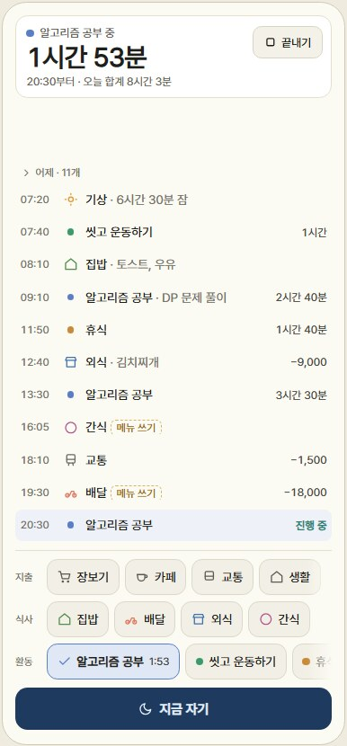
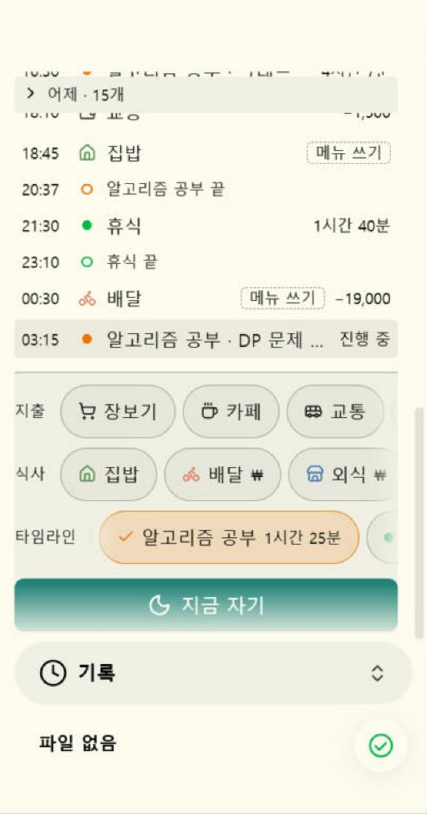
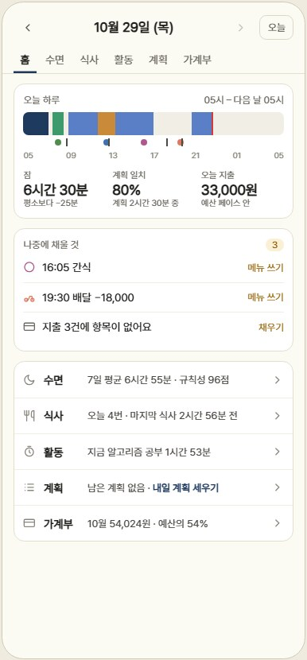
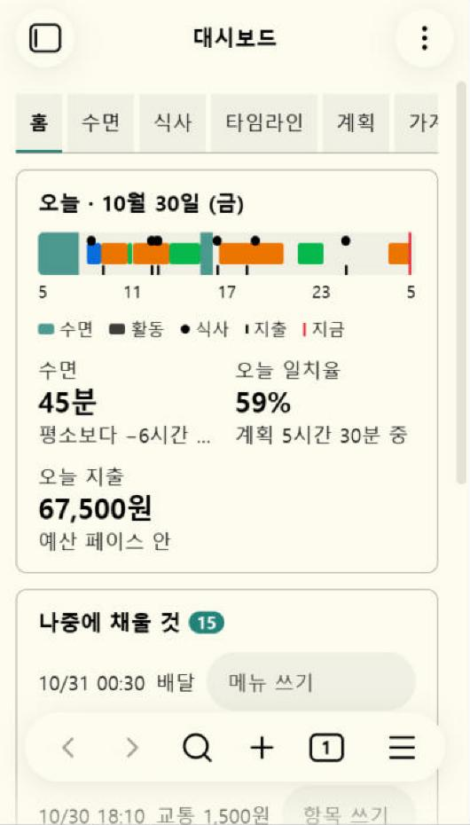
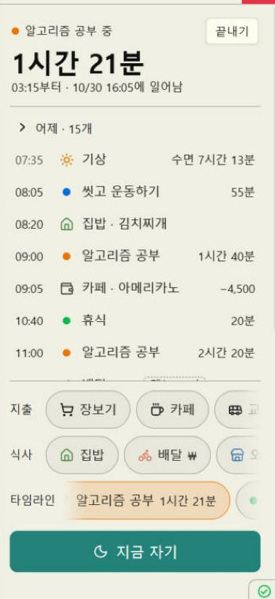
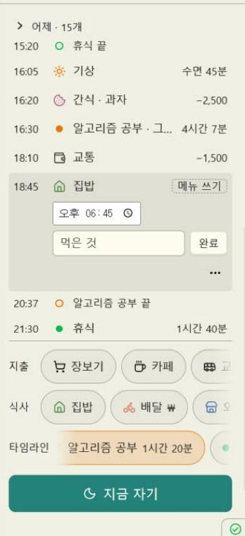
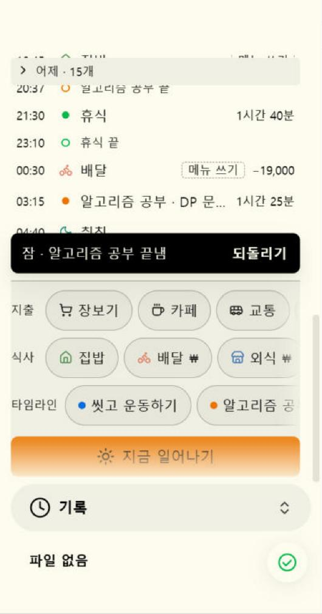
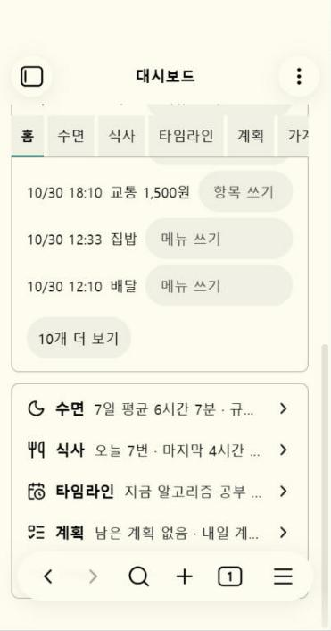
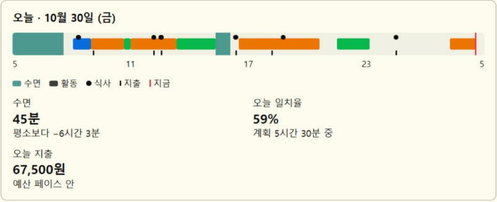

<title>기록 패널·홈 2차 진단</title>
<meta name="claude:viewport-fit-sides" content="cover">
<link rel="stylesheet" href="https://fonts.googleapis.com/css2?family=IBM+Plex+Sans+KR:wght@400;500;600;700&family=IBM+Plex+Mono:wght@400;500&display=swap">
<style>
/* 한 장 = 한 화면. 넓으면 장마다 멈춰 넘기고, 휴대폰에서는 위에서 아래로 읽는다. 목업은 실제 크기(휴대폰 360px, PC 사이드바 330px)로 그린다. */
:root {
  /* 덱 */
  --paper: #f2f0e7;
  --paper-2: #e8e5d9;
  --card: #fbfaf5;
  --ink: #1a2130;
  --ink-2: #474e5c;
  --ink-3: #6f7581;
  --rule: #d5d1c3;
  --navy: #24395c;
  --navy-soft: #dfe5ee;
  --p0: #a82a1f;
  --p1: #a3520c;
  --p2: #2e5a86;
  --p3: #6a6f78;
  --device: #20242b;
  /* 목업: 사용자의 Obsidian 테마(크림 바탕, 청록 강조)를 흉내 낸다 */
  --ob-bg: #fbf9ef;
  --ob-bg2: #f2efe2;
  --ob-tile: #fbf9ef;
  --ob-border: #e2ddcc;
  --ob-text: #23221e;
  --ob-muted: #6c6a61;
  --ob-faint: #9c998e;
  --ob-hover: rgba(35, 34, 30, 0.06);
  --ob-accent: #26806f;
  --ob-on-accent: #ffffff;
  --ob-toast: #23221e;
  --ob-on-toast: #fbf9ef;
  --ob-scrim: rgba(25, 24, 20, 0.32);
  /* 뜻이 정해진 색. 활동 색 6개는 크림 바탕에서 색각 이상 검사를 통과한 순서다. */
  --sleep: #33447a;
  --sleep-soft: #dde1ee;
  --wake-bg: #f3e3bb;
  --wake-ink: #5e430d;
  --c1: #2f6fbf;
  --c2: #d4652a;
  --c3: #1c9a74;
  --c4: #c98f00;
  --c5: #c9517f;
  --c6: #6a55c8;
  --m-home: #4f8a3c;
  --m-deliv: #cf5a40;
  --m-out: #3a6fb5;
  --m-snack: #b5578f;
  --warn: #b25a0b;
  --ok: #3f7d3a;
  /* 색 칸 안 글자: 칸 밝기에 따라 흰색이나 거의 검정 */
  --on-c1: #ffffff;
  --on-c2: #140c04;
  --on-c3: #04251b;
  --on-sleep: #ffffff;
  --font: "IBM Plex Sans KR", "Apple SD Gothic Neo", "Malgun Gothic", system-ui, sans-serif;
  --mono: "IBM Plex Mono", ui-monospace, Consolas, monospace;
}
@media (prefers-color-scheme: dark) {
  :root:not([data-theme="light"]) {
    --paper: #14171c; --paper-2: #1b1f26; --card: #1c2027; --ink: #e8e5db; --ink-2: #bdbab0; --ink-3: #8f8c83; --rule: #2d323b;
    --navy: #9fb7dc; --navy-soft: #243146; --p0: #f08a7e; --p1: #f0a35c; --p2: #8db5e0; --p3: #a3a7ae; --device: #050608;
    --ob-bg: #1f1f1d; --ob-bg2: #272724; --ob-tile: #2c2c29; --ob-border: #3a3935; --ob-text: #e4e2d9; --ob-muted: #a19e94; --ob-faint: #6f6d65;
    --ob-hover: rgba(228, 226, 217, 0.07); --ob-accent: #3fa391; --ob-on-accent: #0f1a17; --ob-toast: #e4e2d9; --ob-on-toast: #1f1f1d; --ob-scrim: rgba(0, 0, 0, 0.5);
    --sleep: #8e9ddb; --sleep-soft: #2a3150; --wake-bg: #4a3c1d; --wake-ink: #f2dca8;
    --c1: #4f85cf; --c2: #cc6634; --c3: #25987a; --c4: #b8861c; --c5: #c75a88; --c6: #8576d8;
    --m-home: #78b064; --m-deliv: #e07a62; --m-out: #6f9be0; --m-snack: #d681b3; --warn: #f0a35c; --ok: #86c27e;
    --on-c1: #0d1520; --on-sleep: #12162a;
    color-scheme: dark;
  }
}
:root[data-theme="dark"] {
  --paper: #14171c; --paper-2: #1b1f26; --card: #1c2027; --ink: #e8e5db; --ink-2: #bdbab0; --ink-3: #8f8c83; --rule: #2d323b;
  --navy: #9fb7dc; --navy-soft: #243146; --p0: #f08a7e; --p1: #f0a35c; --p2: #8db5e0; --p3: #a3a7ae; --device: #050608;
  --ob-bg: #1f1f1d; --ob-bg2: #272724; --ob-tile: #2c2c29; --ob-border: #3a3935; --ob-text: #e4e2d9; --ob-muted: #a19e94; --ob-faint: #6f6d65;
  --ob-hover: rgba(228, 226, 217, 0.07); --ob-accent: #3fa391; --ob-on-accent: #0f1a17; --ob-toast: #e4e2d9; --ob-on-toast: #1f1f1d; --ob-scrim: rgba(0, 0, 0, 0.5);
  --sleep: #8e9ddb; --sleep-soft: #2a3150; --wake-bg: #4a3c1d; --wake-ink: #f2dca8;
  --c1: #4f85cf; --c2: #cc6634; --c3: #25987a; --c4: #b8861c; --c5: #c75a88; --c6: #8576d8;
  --m-home: #78b064; --m-deliv: #e07a62; --m-out: #6f9be0; --m-snack: #d681b3; --warn: #f0a35c; --ok: #86c27e;
  --on-c1: #0d1520; --on-sleep: #12162a;
  color-scheme: dark;
}

* { box-sizing: border-box; }
figure { margin: 0; }
html { scroll-behavior: smooth; }
@media (min-width: 900px) and (min-height: 640px) { html { scroll-snap-type: y proximity; } }
@media (prefers-reduced-motion: reduce) { html { scroll-behavior: auto; } }
body { background: var(--paper); color: var(--ink); font-family: var(--font); font-size: 16px; line-height: 1.6; -webkit-font-smoothing: antialiased; word-break: keep-all; overflow-wrap: anywhere; }
::selection { background: var(--navy); color: var(--paper); }
a { color: var(--navy); text-underline-offset: 3px; }
:focus-visible { outline: 2px solid var(--navy); outline-offset: 2px; }
code { font-family: var(--mono); font-size: 0.86em; background: var(--paper-2); padding: 1px 5px; border-radius: 4px; }

.slide { min-height: 100svh; padding-block: 64px; padding-left: max(16px, env(safe-area-inset-left, 0px)); padding-right: max(16px, env(safe-area-inset-right, 0px)); display: flex; flex-direction: column; justify-content: center; scroll-snap-align: start; border-bottom: 1px solid var(--rule); }
.slide.alt { background: var(--paper-2); }
.slide.dark { background: var(--ink); color: var(--paper); }
.slide.dark .lead, .slide.dark .muted { color: color-mix(in srgb, var(--paper) 75%, var(--ink)); }
.frame { width: 100%; max-width: 1320px; margin-inline: auto; display: flex; flex-direction: column; gap: 28px; }
.tag { font-size: 14px; font-weight: 600; letter-spacing: 0.02em; color: var(--navy); }
.slide.dark .tag { color: color-mix(in srgb, var(--paper) 70%, var(--navy)); }
h1 { font-size: clamp(36px, 5vw, 60px); line-height: 1.15; font-weight: 700; letter-spacing: -0.02em; margin: 0; text-wrap: balance; }
h2 { font-size: clamp(26px, 3.2vw, 40px); line-height: 1.2; font-weight: 700; letter-spacing: -0.015em; margin: 0; text-wrap: balance; }
h3 { font-size: 18px; line-height: 1.35; font-weight: 600; margin: 0; }
p { margin: 0; }
.lead { font-size: 19px; color: var(--ink-2); max-width: 60ch; }
.muted { color: var(--ink-3); }
.small { font-size: 14px; }
.head { display: flex; flex-direction: column; gap: 10px; }

.cols { display: grid; gap: 32px; align-items: start; }
.cols.c2 { grid-template-columns: repeat(2, minmax(0, 1fr)); }
.cols.c3 { grid-template-columns: repeat(3, minmax(0, 1fr)); }
.cols.side { grid-template-columns: auto minmax(0, 1fr); }
.cols.side-r { grid-template-columns: minmax(0, 1fr) auto; }
.stack { display: flex; flex-direction: column; gap: 14px; min-width: 0; }
.row-wrap { display: flex; flex-wrap: wrap; gap: 28px; align-items: flex-start; justify-content: center; }
@media (max-width: 1100px) { .cols.c3 { grid-template-columns: repeat(2, minmax(0, 1fr)); } }
@media (max-width: 860px) { .cols.c2, .cols.c3, .cols.side, .cols.side-r { grid-template-columns: minmax(0, 1fr); } .slide { min-height: 0; padding-block: 48px; } }

/* 번호 목록: 화면 위 번호 표시와 같은 번호 */
.issues { list-style: none; margin: 0; padding: 0; display: flex; flex-direction: column; gap: 12px; counter-reset: n; }
.issues li { display: grid; grid-template-columns: 26px minmax(0, 1fr); gap: 10px; counter-increment: n; }
.issues li::before { content: counter(n); width: 24px; height: 24px; border-radius: 50%; background: var(--navy); color: var(--paper); font-size: 13px; font-weight: 600; display: grid; place-items: center; margin-top: 2px; }
.issues b { font-weight: 600; }
.shot { position: relative; display: inline-block; flex: none; }
.shot img { display: block; border-radius: 14px; border: 1px solid var(--rule); background: var(--card); }
.shot figcaption { font-size: 13px; color: var(--ink-3); margin-top: 8px; }
.pin { position: absolute; width: 24px; height: 24px; margin: -12px 0 0 -12px; border-radius: 50%; background: var(--navy); color: var(--paper); font-size: 13px; font-weight: 600; display: grid; place-items: center; box-shadow: 0 0 0 2px var(--paper); }
.sev { display: inline-block; font-size: 12px; font-weight: 700; padding: 1px 7px; border-radius: 4px; border: 1px solid currentColor; line-height: 1.5; vertical-align: 1px; }
.sev.p0 { color: var(--p0); } .sev.p1 { color: var(--p1); } .sev.p2 { color: var(--p2); } .sev.p3 { color: var(--p3); }

/* 표 */
.tbl-wrap { overflow-x: auto; border: 1px solid var(--rule); border-radius: 12px; background: var(--card); }
table { border-collapse: collapse; width: 100%; font-size: 15px; }
th, td { text-align: left; padding: 10px 14px; border-bottom: 1px solid var(--rule); vertical-align: top; }
th { font-size: 13px; font-weight: 600; color: var(--ink-3); background: var(--paper-2); }
tr:last-child td { border-bottom: none; }
td.num { font-variant-numeric: tabular-nums; white-space: nowrap; }
.score { display: grid; grid-template-columns: repeat(10, minmax(0, 1fr)); gap: 6px; }
.score div { background: var(--card); border: 1px solid var(--rule); border-radius: 10px; padding: 10px; display: flex; flex-direction: column; gap: 4px; min-width: 0; }
.score b { font-size: 26px; font-weight: 700; line-height: 1; }
.score span { font-size: 12px; color: var(--ink-3); line-height: 1.35; }
@media (max-width: 860px) { .score { grid-template-columns: repeat(5, minmax(0, 1fr)); } }
.big { font-size: clamp(64px, 9vw, 120px); font-weight: 700; line-height: 1; letter-spacing: -0.03em; }
.note { background: var(--card); border: 1px solid var(--rule); border-radius: 12px; padding: 16px 18px; }
.crit { display: grid; grid-template-columns: repeat(3, minmax(0, 1fr)); gap: 1px; background: color-mix(in srgb, var(--paper) 18%, transparent); border-radius: 12px; overflow: hidden; }
.crit div { background: var(--ink); padding: 18px 20px; display: flex; flex-direction: column; gap: 6px; }
.crit h3 { color: var(--paper); }
.crit p { font-size: 14.5px; color: color-mix(in srgb, var(--paper) 74%, var(--ink)); }
.crit small { font-size: 12px; color: color-mix(in srgb, var(--paper) 74%, var(--ink)); }
@media (max-width: 1000px) { .crit { grid-template-columns: repeat(2, minmax(0, 1fr)); } }
@media (max-width: 600px) { .crit { grid-template-columns: minmax(0, 1fr); } }

/* 넘기기 */
.nav { position: fixed; right: max(16px, env(safe-area-inset-right, 0px)); bottom: calc(16px + env(safe-area-inset-bottom, 0px)); display: flex; align-items: center; gap: 4px; padding: 4px; border-radius: 999px; background: color-mix(in srgb, var(--card) 92%, transparent); border: 1px solid var(--rule); box-shadow: 0 6px 18px -8px rgba(0,0,0,.25); z-index: 20; font-size: 13px; font-variant-numeric: tabular-nums; }
.nav button { width: 36px; height: 36px; border-radius: 50%; border: none; background: transparent; color: var(--ink); cursor: pointer; display: grid; place-items: center; }
.nav button:hover { background: var(--paper-2); }
.nav span { min-width: 52px; text-align: center; color: var(--ink-2); }
@media (max-width: 860px) { .nav { display: none; } }

.ic { width: 18px; height: 18px; flex: none; fill: none; stroke: currentColor; stroke-width: 2; stroke-linecap: round; stroke-linejoin: round; }

/* ── 목업 공통: 휴대폰 틀과 Obsidian 바탕 ── */
.device { flex: none; display: flex; flex-direction: column; align-items: center; gap: 10px; }
.device > figcaption { font-size: 13px; color: var(--ink-3); text-align: center; max-width: 360px; }
.device { max-width: 100%; }
.phone { width: min(360px, calc(100vw - 32px)); height: 720px; border-radius: 42px; padding: 9px; background: var(--device); box-shadow: 0 22px 44px -22px rgba(15, 18, 26, 0.45), 0 2px 6px rgba(15, 18, 26, 0.12); }
.screen { position: relative; width: 100%; height: 100%; border-radius: 33px; overflow: hidden; background: var(--ob-bg); color: var(--ob-text); font-family: var(--font); font-size: 14px; line-height: 1.4; display: flex; flex-direction: column; }
.sbar { height: 30px; flex: none; display: flex; align-items: center; justify-content: space-between; padding: 4px 26px 0; font-size: 12.5px; font-weight: 600; font-variant-numeric: tabular-nums; }
.sbar i { display: inline-block; width: 22px; height: 10px; border-radius: 3px; border: 1.5px solid currentColor; position: relative; }
.sbar i::after { content: ""; position: absolute; inset: 1.5px 6px 1.5px 1.5px; border-radius: 1px; background: currentColor; }
.pc { width: 330px; height: 690px; flex: none; border: 1px solid var(--ob-border); border-radius: 10px; overflow: hidden; background: var(--ob-bg2); color: var(--ob-text); font-family: var(--font); font-size: 13.5px; line-height: 1.4; display: flex; flex-direction: column; position: relative; box-shadow: 0 14px 30px -18px rgba(15, 18, 26, 0.35); }
.pc-tabs { height: 38px; flex: none; display: flex; align-items: center; gap: 4px; padding: 0 10px; border-bottom: 1px solid var(--ob-border); color: var(--ob-muted); }
.pc-tabs span { width: 28px; height: 28px; border-radius: 6px; display: grid; place-items: center; }
.pc-tabs span.on { background: var(--ob-hover); color: var(--ob-text); }
.pc-tabs .ic { width: 16px; height: 16px; }
.ob-switch { flex: none; margin: 8px 10px 6px; height: 46px; border-radius: 16px; background: var(--ob-bg2); display: flex; align-items: center; gap: 10px; padding: 0 16px; font-weight: 600; color: var(--ob-text); }
.ob-switch .ic:last-child { margin-left: auto; color: var(--ob-muted); width: 16px; }
.home-ind { flex: none; height: 18px; display: grid; place-items: center; }
.home-ind::after { content: ""; width: 120px; height: 4px; border-radius: 2px; background: var(--ob-text); opacity: 0.35; }

/* ── 제안: 기록 패널 ── */
.pn { flex: 1; min-height: 0; display: flex; flex-direction: column; background: var(--ob-bg); }
.pc .pn { background: var(--ob-bg2); }
.pn-now { flex: none; display: grid; grid-template-columns: minmax(0, 1fr) auto; gap: 2px 10px; align-items: center; padding: 10px 14px 12px; border-bottom: 1px solid var(--ob-border); }
.pn-now .who { display: flex; align-items: center; gap: 7px; font-size: 13px; color: var(--ob-muted); min-width: 0; }
.pn-now .who b { color: var(--ob-text); font-weight: 600; font-size: 14.5px; white-space: nowrap; overflow: hidden; text-overflow: ellipsis; }
.dot { width: 9px; height: 9px; border-radius: 50%; flex: none; background: var(--dc, var(--ob-faint)); }
.pn-now .val { font-size: 24px; font-weight: 600; letter-spacing: -0.01em; line-height: 1.2; }
.pn-now .sub { font-size: 12px; color: var(--ob-muted); grid-column: 1; white-space: nowrap; overflow: hidden; text-overflow: ellipsis; }
.pn-now .acts { grid-column: 2; grid-row: 1 / span 3; display: flex; flex-direction: column; gap: 6px; }
.btn { height: 36px; padding: 0 12px; border-radius: 10px; border: 1px solid var(--ob-border); background: var(--ob-tile); color: var(--ob-text); font: 500 13px/1 var(--font); display: inline-flex; align-items: center; justify-content: center; gap: 6px; white-space: nowrap; }
.btn .ic { width: 15px; height: 15px; }
.btn.cta { background: var(--ob-accent); border-color: var(--ob-accent); color: var(--ob-on-accent); }
.btn.sleep { background: var(--sleep); border-color: var(--sleep); color: #fff; }
:root[data-theme="dark"] .btn.sleep { color: #12162a; }
@media (prefers-color-scheme: dark) { :root:not([data-theme="light"]) .btn.sleep { color: #12162a; } }
.btn.ghost { border-color: transparent; background: transparent; color: var(--ob-muted); }
.btn.danger { border-color: transparent; background: transparent; color: var(--p0); }

.pn-feed { flex: 1; min-height: 0; overflow-y: auto; padding: 4px 8px 6px; scrollbar-width: thin; }
.fold { display: flex; align-items: center; gap: 6px; min-height: 34px; padding: 0 6px; font-size: 12.5px; color: var(--ob-muted); }
.fold .ic { width: 14px; height: 14px; }
.r { display: grid; grid-template-columns: 40px 18px minmax(0, 1fr) auto; align-items: center; column-gap: 8px; min-height: 40px; padding: 0 6px; border-radius: 8px; }
.r .t { font-size: 12px; color: var(--ob-muted); font-variant-numeric: tabular-nums; }
.r .mk { display: grid; place-items: center; color: var(--mc, var(--ob-muted)); }
.r .mk .ic { width: 16px; height: 16px; }
.r .tx { min-width: 0; white-space: nowrap; overflow: hidden; text-overflow: ellipsis; }
.r .tx em { font-style: normal; color: var(--ob-muted); }
.r .v { font-size: 12.5px; font-variant-numeric: tabular-nums; color: var(--ob-text); display: flex; align-items: center; gap: 6px; }
.r .v.dim { color: var(--ob-muted); }
.r.live { background: color-mix(in srgb, var(--c2) 11%, transparent); }
.r.new { background: color-mix(in srgb, var(--ob-accent) 13%, transparent); }
.r.hot { outline: 2px solid var(--ob-accent); outline-offset: -2px; }
.prompt { font-size: 11.5px; color: var(--ob-muted); border: 1px dashed var(--ob-faint); border-radius: 6px; padding: 0 6px; line-height: 20px; }
.daysep { font-size: 11.5px; color: var(--ob-faint); padding: 8px 6px 2px; }

.pn-dock { flex: none; display: flex; flex-direction: column; gap: 8px; padding: 8px 10px 10px; border-top: 1px solid var(--ob-border); background: var(--ob-bg2); position: relative; }
.pc .pn-dock { background: var(--ob-bg2); }
.cap { display: flex; justify-content: space-between; font-size: 11.5px; color: var(--ob-muted); padding: 0 2px; font-variant-numeric: tabular-nums; }
.tiles { display: grid; grid-template-columns: repeat(4, minmax(0, 1fr)); gap: 6px; }
.tile { position: relative; height: 50px; border-radius: 12px; border: 1px solid var(--ob-border); background: var(--ob-tile); display: flex; flex-direction: column; align-items: center; justify-content: center; gap: 3px; font-size: 12px; line-height: 1.15; padding: 0 4px; text-align: center; min-width: 0; }
.pc .tile { height: 46px; }
.tile .ic { width: 18px; height: 18px; color: var(--tc, var(--ob-muted)); }
.tile .nm { max-width: 100%; white-space: nowrap; overflow: hidden; text-overflow: ellipsis; }
.tile .won { position: absolute; top: 2px; right: 6px; font-size: 11px; color: var(--ob-muted); }
.tile .dot { width: 10px; height: 10px; }
/* 활동 칸은 이름이 길어 두 줄까지 쓴다 */
.tile.act { height: 56px; }
.pc .tile.act { height: 52px; }
.tile.act .nm { white-space: normal; display: -webkit-box; -webkit-line-clamp: 2; -webkit-box-orient: vertical; line-height: 1.2; }
.tile.on { border-color: var(--dc); background: color-mix(in srgb, var(--dc) 15%, var(--ob-tile)); font-weight: 600; }
.tile.on .el { display: flex; align-items: center; gap: 3px; font-size: 11px; font-weight: 600; color: var(--ob-text); font-variant-numeric: tabular-nums; }
.tile.on .el .ic { width: 12px; height: 12px; color: var(--ob-text); stroke-width: 2.6; }
.tile.add { border-style: dashed; color: var(--ob-muted); }
.bedtime { display: flex; align-items: center; gap: 10px; padding: 8px 8px 8px 12px; border-radius: 12px; background: color-mix(in srgb, var(--sleep) 12%, var(--ob-bg2)); font-size: 12.5px; }
.bedtime p { flex: 1; min-width: 0; }
.bedtime p b { display: block; font-size: 13.5px; }
.toast { position: absolute; left: 10px; right: 10px; bottom: calc(100% + 8px); display: flex; align-items: center; gap: 2px; min-height: 46px; padding: 4px 4px 4px 14px; border-radius: 12px; background: var(--ob-toast); color: var(--ob-on-toast); font-size: 13px; box-shadow: 0 8px 18px -8px rgba(0,0,0,.4); }
.toast span { flex: 1; min-width: 0; white-space: nowrap; overflow: hidden; text-overflow: ellipsis; }
.toast button { height: 38px; padding: 0 10px; border: none; border-radius: 8px; background: transparent; color: var(--ob-on-toast); font: 600 13px/1 var(--font); }

/* 시트 */
.scrim { position: absolute; inset: 0; background: var(--ob-scrim); }
.sheet { position: absolute; left: 0; right: 0; bottom: 0; background: var(--ob-bg); border-radius: 20px 20px 0 0; padding: 8px 16px 14px; display: flex; flex-direction: column; gap: 12px; box-shadow: 0 -10px 28px -14px rgba(0,0,0,.35); }
.sheet .grab { width: 36px; height: 4px; border-radius: 2px; background: var(--ob-faint); margin: 0 auto; opacity: .6; }
.sheet-head { display: flex; align-items: center; gap: 8px; font-weight: 600; font-size: 15px; }
.sheet-head .ic { color: var(--tc, var(--ob-muted)); }
.sheet-head small { font-weight: 400; color: var(--ob-muted); font-size: 12.5px; }
.sheet-head .x { margin-left: auto; width: 36px; height: 36px; border-radius: 10px; display: grid; place-items: center; color: var(--ob-muted); }
.field { display: flex; flex-direction: column; gap: 6px; }
.field > label { font-size: 12px; color: var(--ob-muted); }
.chips { display: flex; flex-wrap: wrap; gap: 6px; }
.chip { height: 34px; padding: 0 12px; border-radius: 17px; border: 1px solid var(--ob-border); background: var(--ob-tile); display: inline-flex; align-items: center; gap: 6px; font-size: 13px; font-variant-numeric: tabular-nums; }
.chip .ic { width: 15px; height: 15px; color: var(--tc, var(--ob-muted)); }
.chip.on { border-color: var(--ob-accent); background: color-mix(in srgb, var(--ob-accent) 14%, var(--ob-tile)); font-weight: 600; }
.input { height: 44px; border-radius: 10px; border: 1px solid var(--ob-border); background: var(--ob-tile); display: flex; align-items: center; padding: 0 12px; font-size: 15px; gap: 6px; }
.input.focus { border-color: var(--ob-accent); box-shadow: 0 0 0 2px color-mix(in srgb, var(--ob-accent) 25%, transparent); }
.input .ph { color: var(--ob-muted); }
.input.amount { justify-content: flex-end; font-size: 24px; font-weight: 600; height: 52px; }
.input.amount small { font-size: 14px; font-weight: 400; color: var(--ob-muted); }
.seg { display: grid; grid-auto-flow: column; grid-auto-columns: minmax(0, 1fr); border: 1px solid var(--ob-border); border-radius: 10px; overflow: hidden; }
.seg span { height: 38px; display: grid; place-items: center; font-size: 13px; color: var(--ob-muted); background: var(--ob-tile); }
.seg span + span { border-left: 1px solid var(--ob-border); }
.seg span.on { background: color-mix(in srgb, var(--ob-accent) 14%, var(--ob-tile)); color: var(--ob-text); font-weight: 600; }
.stepper { display: grid; grid-template-columns: 52px minmax(0, 1fr) 52px; gap: 6px; }
.stepper span { height: 40px; border-radius: 10px; border: 1px solid var(--ob-border); background: var(--ob-tile); display: grid; place-items: center; font-size: 13px; font-variant-numeric: tabular-nums; }
.stepper span:nth-child(2) { font-size: 16px; font-weight: 600; }
.sheet-foot { display: flex; align-items: center; gap: 8px; }
.sheet-foot .btn.cta { flex: 1; height: 46px; font-size: 14.5px; }

/* ── 홈 ── */
.ob-head { flex: none; height: 50px; display: flex; align-items: center; gap: 10px; padding: 0 14px; }
.ob-head .ic { color: var(--ob-muted); }
.ob-head b { flex: 1; text-align: center; font-size: 15px; font-weight: 600; }
.hm { flex: 1; min-height: 0; overflow-y: auto; scrollbar-width: thin; }
.hm-inner { display: flex; flex-direction: column; gap: 14px; padding: 0 14px 92px; }
.ttabs { position: sticky; top: 0; z-index: 2; display: flex; gap: 18px; padding: 0 14px; background: var(--ob-bg); border-bottom: 1px solid var(--ob-border); font-size: 13.5px; color: var(--ob-muted); }
.ttabs span { padding: 10px 0 8px; border-bottom: 2px solid transparent; white-space: nowrap; }
.ttabs span.on { color: var(--ob-text); font-weight: 600; border-bottom-color: var(--ob-text); }
.dhead { display: flex; align-items: center; gap: 4px; padding-top: 12px; }
.dhead .ic { color: var(--ob-muted); width: 18px; }
.dhead b { font-size: 17px; font-weight: 600; padding: 0 2px; }
.dhead .btn { margin-left: auto; height: 32px; }
.dsub { font-size: 12px; color: var(--ob-muted); margin-top: -10px; }
.sec { display: flex; flex-direction: column; gap: 10px; }
.sec-title { display: flex; align-items: baseline; justify-content: space-between; gap: 8px; font-size: 13px; font-weight: 600; }
.sec-title span { font-weight: 400; color: var(--ob-muted); font-size: 12px; }
.panel-card { border: 1px solid var(--ob-border); border-radius: 12px; padding: 12px; background: var(--ob-bg); display: flex; flex-direction: column; gap: 10px; }

/* 하루 리본 */
/* 위 18px은 '지금' 라벨 자리 */
.rb { position: relative; padding-top: 18px; }
.rb-lanes { position: relative; display: grid; grid-template-columns: var(--lab, 0px) minmax(0, 1fr); row-gap: 4px; align-items: center; }
.rb-lab { font-size: 11px; color: var(--ob-muted); }
.rb-lane { position: relative; height: var(--h, 22px); }
.rb-lane.base { background: color-mix(in srgb, var(--ob-text) 5%, transparent); border-radius: 4px; }
.rb-seg { position: absolute; top: 0; bottom: 0; border-radius: 3px; overflow: hidden; display: flex; align-items: center; padding-left: 5px; font-size: 11px; font-weight: 600; color: var(--on, #fff); white-space: nowrap; }
.rb-seg.sl { background: var(--sleep); --on: var(--on-sleep); }
.rb-seg.sl.nap { background: color-mix(in srgb, var(--sleep) 70%, var(--ob-bg)); }
.rb-seg.pl { background: color-mix(in srgb, var(--sc) 24%, transparent); box-shadow: inset 0 0 0 1px color-mix(in srgb, var(--sc) 55%, transparent); }
.rb-ev { position: absolute; top: 50%; width: 18px; height: 18px; margin: -9px 0 0 -9px; border-radius: 50%; background: var(--ob-bg); box-shadow: 0 0 0 1.5px var(--ec); color: var(--ec); display: grid; place-items: center; }
.rb-ev .ic { width: 11px; height: 11px; stroke-width: 2.4; }
.rb-ev b { position: absolute; top: -9px; right: -10px; min-width: 17px; height: 17px; border-radius: 9px; background: var(--ob-text); color: var(--ob-bg); font-size: 11px; display: grid; place-items: center; padding: 0 4px; }
.rb-axis { position: relative; height: 16px; margin-left: var(--lab, 0px); font-size: 11px; color: var(--ob-muted); font-variant-numeric: tabular-nums; }
.rb-axis span { position: absolute; transform: translateX(-50%); top: 1px; }
.rb-axis i { position: absolute; top: -3px; width: 1px; height: 3px; background: var(--ob-faint); }
.rb-now { position: absolute; top: 2px; bottom: 14px; width: 2px; margin-left: -1px; background: var(--ob-text); border-radius: 1px; }
.rb-now span { position: absolute; top: -3px; right: 5px; font-size: 11px; font-weight: 600; line-height: 14px; white-space: nowrap; background: var(--ob-bg); padding: 0 3px; }
.rb-key { display: flex; flex-wrap: wrap; gap: 4px 12px; font-size: 12px; color: var(--ob-muted); }
.rb-key span { display: inline-flex; align-items: center; gap: 5px; }
.rb-key i { width: 10px; height: 10px; border-radius: 3px; background: var(--kc); display: inline-block; }
.rb-key b { color: var(--ob-text); font-weight: 500; font-variant-numeric: tabular-nums; }

/* 비교 막대(bullet) */
.bul { display: grid; grid-template-columns: minmax(0, 1fr) auto; gap: 4px 10px; align-items: baseline; }
.bul-label { font-size: 12.5px; color: var(--ob-muted); }
.bul-val { font-size: 17px; font-weight: 600; text-align: right; white-space: nowrap; }
.bul-track { grid-column: 1 / -1; position: relative; height: 10px; border-radius: 5px; background: color-mix(in srgb, var(--bc) 16%, transparent); }
.bul-bar { position: absolute; left: 0; top: 0; bottom: 0; border-radius: 5px; background: var(--bc); }
.bul-mark { position: absolute; top: -4px; bottom: -4px; width: 2px; margin-left: -1px; background: var(--ob-text); border-radius: 1px; }
.bul-foot { grid-column: 1 / -1; font-size: 12px; color: var(--ob-muted); display: flex; align-items: center; gap: 5px; }
.bul-foot .ic { width: 13px; height: 13px; }
.bul-foot.good { color: var(--ok); }
.bul-foot.warn { color: var(--warn); }
.later { display: flex; flex-direction: column; }
.later div { display: grid; grid-template-columns: 70px 18px minmax(0, 1fr) auto; gap: 8px; align-items: center; min-height: 40px; border-top: 1px solid var(--ob-border); font-size: 13.5px; }
.later div:first-child { border-top: none; }
.later .t { font-size: 12px; color: var(--ob-muted); font-variant-numeric: tabular-nums; }
.later .ic { width: 16px; height: 16px; color: var(--ec); }
.later a { font-size: 12.5px; color: var(--ob-accent); text-decoration: none; font-weight: 600; }
.pages { display: flex; flex-direction: column; border: 1px solid var(--ob-border); border-radius: 12px; overflow: hidden; }
.pages div { display: grid; grid-template-columns: 22px minmax(0, 1fr) 16px; gap: 2px 10px; align-items: center; padding: 9px 12px; border-top: 1px solid var(--ob-border); }
.pages div:first-child { border-top: none; }
.pages .ic { color: var(--ob-muted); grid-row: 1 / span 2; }
.pages b { font-size: 14px; font-weight: 600; }
.pages span { grid-column: 2; font-size: 12.5px; color: var(--ob-muted); }
.pages .ic.chev { grid-column: 3; grid-row: 1 / span 2; width: 16px; }
.ob-nav { position: absolute; left: 14px; right: 14px; bottom: 24px; height: 52px; border-radius: 26px; background: color-mix(in srgb, var(--ob-bg) 92%, transparent); box-shadow: 0 6px 20px -6px rgba(0,0,0,.25); display: flex; align-items: center; justify-content: space-around; color: var(--ob-text); }
.ob-nav .ic { width: 20px; height: 20px; }

/* PC 홈 */
.desk { width: 860px; flex: none; border: 1px solid var(--ob-border); border-radius: 10px; background: var(--ob-bg); color: var(--ob-text); font-family: var(--font); font-size: 14px; line-height: 1.4; overflow: hidden; box-shadow: 0 14px 30px -18px rgba(15, 18, 26, 0.35); }
.desk .ttabs { position: static; }
.desk-body { padding: 0 22px 22px; display: flex; flex-direction: column; gap: 16px; }
.desk-grid { display: grid; grid-template-columns: repeat(3, minmax(0, 1fr)); gap: 22px; }
.desk-2 { display: grid; grid-template-columns: repeat(2, minmax(0, 1fr)); gap: 16px; }
.wide-scroll { overflow-x: auto; max-width: 100%; }

/* 색 */
.sw { display: grid; grid-template-columns: repeat(auto-fill, minmax(150px, 1fr)); gap: 10px; }
.sw div { border: 1px solid var(--rule); border-radius: 10px; overflow: hidden; background: var(--card); font-size: 13px; }
.sw i { display: block; height: 44px; background: var(--swc); }
.sw p { padding: 8px 10px; line-height: 1.35; }
.sw p b { display: block; font-weight: 600; }
.sw p span { color: var(--ink-3); font-size: 12px; }
.compare { display: flex; flex-wrap: wrap; gap: 18px; align-items: flex-start; }
.compare figure { margin: 0; display: flex; flex-direction: column; gap: 6px; }
.compare figcaption { font-size: 13px; color: var(--ink-3); }
.compare img { border-radius: 12px; border: 1px solid var(--rule); display: block; height: 420px; width: auto; }
@media (max-width: 860px) { .compare img { height: auto; width: 100%; max-width: 360px; } }
.phase { display: grid; grid-template-columns: 110px minmax(0, 1fr); gap: 10px 18px; align-items: baseline; }
.phase dt { font-weight: 700; color: var(--navy); }
.slide.dark .phase dt { color: var(--paper); }
.phase dd { margin: 0; }
</style>

<svg width="0" height="0" style="position:absolute" aria-hidden="true">
  <symbol id="i-moon" viewBox="0 0 24 24"><path d="M12 3a6 6 0 0 0 9 9 9 9 0 1 1-9-9Z"/></symbol>
  <symbol id="i-sun" viewBox="0 0 24 24"><circle cx="12" cy="12" r="4"/><path d="M12 2v2M12 20v2M4.93 4.93l1.41 1.41M17.66 17.66l1.41 1.41M2 12h2M20 12h2M6.34 17.66l-1.41 1.41M19.07 4.93l-1.41 1.41"/></symbol>
  <symbol id="i-house" viewBox="0 0 24 24"><path d="M15 21v-8a1 1 0 0 0-1-1h-4a1 1 0 0 0-1 1v8"/><path d="M3 10a2 2 0 0 1 .7-1.5l7-6a2 2 0 0 1 2.6 0l7 6A2 2 0 0 1 21 10v9a2 2 0 0 1-2 2H5a2 2 0 0 1-2-2z"/></symbol>
  <symbol id="i-bike" viewBox="0 0 24 24"><circle cx="18.5" cy="17.5" r="3.5"/><circle cx="5.5" cy="17.5" r="3.5"/><circle cx="15" cy="5" r="1"/><path d="M12 17.5V14l-3-3 4-3 2 3h2"/></symbol>
  <symbol id="i-store" viewBox="0 0 24 24"><path d="m2 7 4.4-4.4A2 2 0 0 1 7.8 2h8.4a2 2 0 0 1 1.4.6L22 7"/><path d="M4 12v8a2 2 0 0 0 2 2h12a2 2 0 0 0 2-2v-8"/><path d="M15 22v-4a2 2 0 0 0-2-2h-2a2 2 0 0 0-2 2v4"/><path d="M2 7h20v3a2 2 0 0 1-2 2 2.7 2.7 0 0 1-2-1 2.7 2.7 0 0 1-4 0 2.7 2.7 0 0 1-4 0 2.7 2.7 0 0 1-4 0 2.7 2.7 0 0 1-2 1 2 2 0 0 1-2-2z"/></symbol>
  <symbol id="i-cookie" viewBox="0 0 24 24"><path d="M12 2a10 10 0 1 0 10 10 4 4 0 0 1-5-5 4 4 0 0 1-5-5"/><path d="M8.5 8.5v.01M16 15.5v.01M12 12v.01M11 17v.01M7 14v.01"/></symbol>
  <symbol id="i-cart" viewBox="0 0 24 24"><circle cx="8" cy="21" r="1"/><circle cx="19" cy="21" r="1"/><path d="M2 2h2l2.7 12.4a2 2 0 0 0 2 1.6h9.7a2 2 0 0 0 2-1.6L22 7H5.1"/></symbol>
  <symbol id="i-coffee" viewBox="0 0 24 24"><path d="M10 2v2M14 2v2M6 2v2"/><path d="M16 8a1 1 0 0 1 1 1v8a4 4 0 0 1-4 4H7a4 4 0 0 1-4-4V9a1 1 0 0 1 1-1h14a4 4 0 1 1 0 8h-1"/></symbol>
  <symbol id="i-bus" viewBox="0 0 24 24"><path d="M8 6v6M15 6v6M2 12h19.6M18 18h3s.5-1.7.8-2.8c.1-.4.2-.8.2-1.2s-.1-.8-.2-1.2l-1.4-5C20.1 6.8 19.1 6 18 6H4a2 2 0 0 0-2 2v10h3"/><circle cx="7" cy="18" r="2"/><path d="M9 18h5"/><circle cx="16" cy="18" r="2"/></symbol>
  <symbol id="i-sofa" viewBox="0 0 24 24"><path d="M20 9V6a2 2 0 0 0-2-2H6a2 2 0 0 0-2 2v3"/><path d="M2 16a2 2 0 0 0 2 2h16a2 2 0 0 0 2-2v-5a2 2 0 0 0-4 0v1.5a.5.5 0 0 1-.5.5h-11a.5.5 0 0 1-.5-.5V11a2 2 0 0 0-4 0z"/><path d="M4 18v2M20 18v2"/></symbol>
  <symbol id="i-wallet" viewBox="0 0 24 24"><path d="M19 7V4a1 1 0 0 0-1-1H5a2 2 0 0 0 0 4h15a1 1 0 0 1 1 1v4h-3a2 2 0 0 0 0 4h3a1 1 0 0 0 1-1v-2a1 1 0 0 0-1-1"/><path d="M3 5v14a2 2 0 0 0 2 2h15a1 1 0 0 0 1-1v-4"/></symbol>
  <symbol id="i-check" viewBox="0 0 24 24"><path d="M20 6 9 17l-5-5"/></symbol>
  <symbol id="i-x" viewBox="0 0 24 24"><path d="M18 6 6 18M6 6l12 12"/></symbol>
  <symbol id="i-right" viewBox="0 0 24 24"><path d="m9 18 6-6-6-6"/></symbol>
  <symbol id="i-left" viewBox="0 0 24 24"><path d="m15 18-6-6 6-6"/></symbol>
  <symbol id="i-down" viewBox="0 0 24 24"><path d="m6 9 6 6 6-6"/></symbol>
  <symbol id="i-updown" viewBox="0 0 24 24"><path d="m7 15 5 5 5-5M7 9l5-5 5 5"/></symbol>
  <symbol id="i-plus" viewBox="0 0 24 24"><path d="M5 12h14M12 5v14"/></symbol>
  <symbol id="i-square" viewBox="0 0 24 24"><rect x="6" y="6" width="12" height="12" rx="2"/></symbol>
  <symbol id="i-clock" viewBox="0 0 24 24"><circle cx="12" cy="12" r="10"/><path d="M12 6v6l4 2"/></symbol>
  <symbol id="i-utensils" viewBox="0 0 24 24"><path d="M3 2v7c0 1.1.9 2 2 2h4a2 2 0 0 0 2-2V2M7 2v20M21 15V2a5 5 0 0 0-5 5v6c0 1.1.9 2 2 2h3Zm0 0v7"/></symbol>
  <symbol id="i-todo" viewBox="0 0 24 24"><rect x="3" y="5" width="6" height="6" rx="1"/><path d="m3 17 2 2 4-4M13 6h8M13 12h8M13 18h8"/></symbol>
  <symbol id="i-calclock" viewBox="0 0 24 24"><path d="M21 7.5V6a2 2 0 0 0-2-2H5a2 2 0 0 0-2 2v14a2 2 0 0 0 2 2h3.5M16 2v4M8 2v4M3 10h5"/><path d="M17.5 17.5 16 16.3V14"/><circle cx="16" cy="16" r="6"/></symbol>
  <symbol id="i-alert" viewBox="0 0 24 24"><path d="m21.7 18-8-14a2 2 0 0 0-3.5 0l-8 14A2 2 0 0 0 4 21h16a2 2 0 0 0 1.7-3"/><path d="M12 9v4M12 17h.01"/></symbol>
  <symbol id="i-sidebar" viewBox="0 0 24 24"><rect x="3" y="3" width="18" height="18" rx="2"/><path d="M9 3v18"/></symbol>
  <symbol id="i-more" viewBox="0 0 24 24"><circle cx="12" cy="12" r="1"/><circle cx="19" cy="12" r="1"/><circle cx="5" cy="12" r="1"/></symbol>
  <symbol id="i-vmore" viewBox="0 0 24 24"><circle cx="12" cy="12" r="1"/><circle cx="12" cy="5" r="1"/><circle cx="12" cy="19" r="1"/></symbol>
  <symbol id="i-search" viewBox="0 0 24 24"><circle cx="11" cy="11" r="8"/><path d="m21 21-4.3-4.3"/></symbol>
  <symbol id="i-menu" viewBox="0 0 24 24"><path d="M4 6h16M4 12h16M4 18h16"/></symbol>
  <symbol id="i-link" viewBox="0 0 24 24"><path d="M10 13a5 5 0 0 0 7.5.5l3-3a5 5 0 0 0-7-7l-1.7 1.7"/><path d="M14 11a5 5 0 0 0-7.5-.5l-3 3a5 5 0 0 0 7 7l1.7-1.7"/></symbol>
  <symbol id="i-list" viewBox="0 0 24 24"><path d="M3 6h.01M3 12h.01M3 18h.01M8 6h13M8 12h13M8 18h13"/></symbol>
  <symbol id="i-undo" viewBox="0 0 24 24"><path d="M9 14 4 9l5-5"/><path d="M4 9h10.5a5.5 5.5 0 0 1 0 11H11"/></symbol>
  <symbol id="i-trend" viewBox="0 0 24 24"><path d="m22 7-8.5 8.5-5-5L2 17"/><path d="M16 7h6v6"/></symbol>
</svg>

<nav class="nav" aria-label="장 넘기기">
  <button type="button" id="prev" aria-label="이전 장"><svg class="ic"><use href="#i-left"/></svg></button>
  <span id="count">1 / 18</span>
  <button type="button" id="next" aria-label="다음 장"><svg class="ic"><use href="#i-right"/></svg></button>
</nav>

<main>

<!-- 1 -->
<section class="slide" id="s1">
  <div class="frame">
    <p class="tag">atoz · UI/UX 2차 진단 · 2026-10-31</p>
    <h1>기록 패널과 홈,<br>목업보다 나빠진 곳과 다시 고칠 모습</h1>
    <p class="lead">1차 개선(U1–U12)은 버그와 접근성을 잡았지만, 손에 쥐는 느낌은 목업보다 나빠졌다. 테스트 보관함에서 휴대폰 폭(400px)과 PC 사이드바(330px)로 직접 눌러 보며 불편한 곳을 모두 적고, 고칠 모습을 실제 크기 목업으로 그렸다.</p>
    <div class="cols c3 small">
      <div class="note"><h3>본 것</h3><p class="muted">기록 패널(<code>Daynight.ts</code> <code>DaynightView</code>), 대시보드 홈(<code>Dashboard.ts</code>). 다른 페이지는 일관성만.</p></div>
      <div class="note"><h3>어떻게</h3><p class="muted">웹 조사로 기준 10개를 더 세우고, 같은 하루치 기록으로 화면을 직접 조작했다. 디자인 리뷰는 따로 한 번 더 돌려 대조했다.</p></div>
      <div class="note"><h3>한계</h3><p class="muted">휴대폰은 Obsidian 모바일 흉내(<code>app.emulateMobile</code>)로 봤다. 화면 키보드와 실제 기기의 터치·안전 영역은 기기에서 다시 본다.</p></div>
    </div>
  </div>
</section>

<!-- 2 -->
<section class="slide dark" id="s2">
  <div class="frame">
    <div class="head">
      <p class="tag">기준</p>
      <h2>1차 기준 13개에 더해, 이번에 새로 세운 기준</h2>
      <p class="lead">1차 기준(C1–C13: 한 화면 집중, 엄지 영역, 누를 곳 크기, 한 번 기록, 되돌리기, 쉬운 말 등)은 그대로 쓴다. 이번에는 기록 패널을 매일 쓰는 손과, 차트를 읽는 눈에 맞춘 기준을 더했다.</p>
    </div>
    <div class="crit">
      <div><h3>R1 · 핵심은 한 번, 나머지는 나중에</h3><p>기록 자체는 한 번 누르면 끝, 메뉴·항목은 선택. 최근·자주 쓴 값을 한 번에 다시 고르게.</p><small>기록 앱 사례(최근·자주 목록이 가장 효과 큼)</small></div>
      <div><h3>R2 · 고를 것은 다 보이게</h3><p>숨은 가로 스크롤 뒤의 선택지는 '기억'에 기댄다. 한 묶음 4개 안팎을 한눈에.</p><small>Nielsen 6, 인지 부하(작업 기억 4개)</small></div>
      <div><h3>R3 · 지금 상태는 늘 보이게</h3><p>무엇을 하는 중이고 얼마나 됐는지, 끝낼 버튼이 스크롤과 상관없이 보여야 한다.</p><small>Nielsen 1</small></div>
      <div><h3>R4 · 되돌리기 &gt; 확인창, 알림은 4–10초</h3><p>되돌릴 수 있으면 바로 하고 되돌리기를 준다. 스낵바는 짧게, 행동 하나–둘.</p><small>GNOME HIG, Material snackbar</small></div>
      <div><h3>R5 · 시트는 닫기 버튼과 뒤로가기</h3><p>바텀 시트에 보이는 X, 뒤로 가기로 닫힘, 시트 위에 시트 금지, 긴 내용 금지.</p><small>NN/g Bottom Sheets</small></div>
      <div><h3>R6 · 누를 곳 44pt/48dp, 목록 줄 44–56</h3><p>휴대폰에서 줄을 눌러 고친다면 줄 높이도 누를 곳이다.</p><small>Apple HIG, Material</small></div>
      <div><h3>R7 · 차트 하나에 메시지 하나</h3><p>단순하게, 자세한 건 누르면. 같은 데이터는 여러 차트에서 같은 색과 모양으로.</p><small>Apple HIG Charting data</small></div>
      <div><h3>R8 · 데이터 잉크와 비교</h3><p>장식 잉크를 덜고, 숫자에는 기준선. 목표와 비교는 bullet graph처럼 한 줄에.</p><small>Tufte, Few(bullet graph 명세)</small></div>
      <div><h3>R9 · 휴대폰 차트는 줄이지 말고 다시 짠다</h3><p>범례 대신 직접 라벨, 축 글자 줄이기, 한 방향 스크롤, 휴대폰 폭에서 확인.</p><small>Datawrapper, MDPI 2025 모바일 차트 실험</small></div>
    </div>
    <p class="small muted">출처: Smashing Magazine Thumb Zone · NN/g Bottom Sheets · GNOME HIG Dialogs · Material Design · Apple HIG · Few, Bullet Graph Design Spec · Datawrapper Academy · MDPI Applied Sciences 15(19) 10832 · Toggl 커뮤니티(하루 타임라인 띠 요청)</p>
  </div>
</section>

<!-- 3 -->
<section class="slide" id="s3">
  <div class="frame">
    <div class="head">
      <p class="tag">한 줄 진단</p>
      <h2 id="verdict">기록은 빨라졌지만 '보이는 것'이 줄었다. 고를 것은 가로 스크롤 뒤에, 지금 상태는 스크롤 위에, 홈 그래프는 다섯 가지 표시를 32px 한 줄에 겹쳐 아무것도 말하지 않는다.</h2>
    </div>
    <div class="cols side">
      <div class="stack" style="gap:6px">
        <div class="big" id="total">17<span style="font-size:0.4em;color:var(--ink-3)">/40</span></div>
        <p class="muted small" id="total-note">Nielsen 10원칙, '나쁨' 구간(12–19). 1차(22)보다 내려갔다. 되돌리기·금액 시트는 나아졌지만, 숨은 선택지, 사라진 상태, 틀린 숫자, 자정을 넘긴 시각 고치기가 더 크게 깎는다. 인지 부하 체크 8개 중 5개 실패.</p>
      </div>
      <div class="score" id="scores">
        <div><b>2</b><span>상태 보이기</span></div>
        <div><b>2</b><span>현실의 말</span></div>
        <div><b>2</b><span>되돌리기·통제</span></div>
        <div><b>1</b><span>일관성</span></div>
        <div><b>1</b><span>실수 막기</span></div>
        <div><b>1</b><span>기억 대신 보기</span></div>
        <div><b>2</b><span>빠른 길</span></div>
        <div><b>2</b><span>군더더기 없음</span></div>
        <div><b>2</b><span>오류 복구</span></div>
        <div><b>2</b><span>도움말</span></div>
      </div>
    </div>
    <div class="cols c2">
      <div class="note"><h3>지킬 것</h3><p class="muted">한 번 누르면 지금 시각으로 기록, 되돌리기 토스트, 금액 시트의 최근 금액과 결제 수단 분할 버튼, 연타 잠금, 한글 조합 중 Enter 무시, 끊긴 기록 카드.</p></div>
      <div class="note"><h3>가장 큰 기회</h3><p class="muted">패널은 '지금'과 '고를 것'을 늘 보이게, 홈은 '하루를 어디에 썼나' 한 가지만 말하게. 둘 다 같은 색과 아이콘을 쓰면 서로를 설명한다.</p></div>
    </div>
  </div>
</section>

<!-- 4 -->
<section class="slide alt" id="s4">
  <div class="frame">
    <div class="head">
      <p class="tag">목업과 지금</p>
      <h2>같은 설계인데 왜 나빠 보이나: 크기, 색, 스크롤 세 가지가 바뀌었다</h2>
    </div>
    <div class="cols side">
      <div class="compare">
        <figure><figcaption>1차 목업</figcaption></figure>
        <figure><figcaption>지금(휴대폰 400px)</figcaption></figure>
        <figure><figcaption>1차 목업</figcaption></figure>
        <figure><figcaption>지금(휴대폰 400px)</figcaption></figure>
      </div>
      <ol class="issues" style="max-width:440px">
        <li><p><b>패널 전체가 한 번에 스크롤된다.</b> 최신 기록을 보이려고 맨 아래로 내리니 상태 카드와 '끝내기'가 화면 밖으로 사라진다.</p></li>
        <li><p><b>알약이 커졌다.</b> 목업 34px·줄당 4개 → 구현 40/44px, 좌우 여백 14px, 묶음 이름 '타임라인'까지 붙어 줄당 2–3개만 보인다.</p></li>
        <li><p><b>색을 테마 기본색 그대로 썼다.</b> <code>--color-orange/green/blue</code> 원색이 크림 바탕과 부딪히고, 청록 강조색이 잠·버튼·배지에 겹친다.</p></li>
        <li><p><b>활동 '끝' 줄이 따로 쌓인다.</b> 활동 하나가 두 줄이 되어 피드가 길고 시끄럽다.</p></li>
        <li><p><b>홈은 목업의 날짜 머리말·글자 탭이 빠지고</b> 상자 탭, 2열에 하나 남은 숫자, 입력칸 15개가 들어왔다.</p></li>
      </ol>
    </div>
  </div>
</section>

<!-- 5 -->
<section class="slide" id="s5">
  <div class="frame">
    <div class="head">
      <p class="tag">1부 · 기록 패널 · 불편한 점 전부</p>
      <h2>흐름마다 걸리는 곳</h2>
    </div>
    <div class="tbl-wrap">
      <table id="pain">
        <thead><tr><th>흐름</th><th>지금 일어나는 일</th><th>우선</th></tr></thead>
        <tbody>
          <tr><td>지금 상태 보기</td><td>피드가 맨 아래로 내려가며 상태 카드·'끝내기'가 화면 밖. PC에서는 휠을 위로 굴려도 패널이 올라가지 않았다(아래로는 됨, 스크롤바 끌기는 됨).</td><td><span class="sev p0">P0</span></td></tr>
          <tr><td>자정 넘은 기록 고치기</td><td>00:30 배달을 23:50으로 고치면 날짜는 그대로 10/31이라 '10/31 23:50', 곧 미래로 저장된다. 하루가 05시에 시작해 매일 생길 수 있다. 시각 검사는 잠에만 있다(<code>commitEdit</code>).</td><td><span class="sev p0">P0</span></td></tr>
          <tr><td>금액 넣기(휴대폰)</td><td>시트를 열면 늘 키보드가 뜨고(자동 초점), 최근 금액 칩을 눌러도 칸에 초점이 가 다시 뜬다. '최근 금액' 툴팁이 결제 수단을 덮는다. 시트의 '기록' 바로 아래에 '지금 자기'가 그대로 있다.</td><td><span class="sev p1">P1</span></td></tr>
          <tr><td>지출·식사 고르기</td><td>줄마다 2–3개만 보이고 나머지(교통·생활, 외식·간식)는 가로로 밀어야 나온다. 오른쪽 끝 흐림 말고는 단서가 없다.</td><td><span class="sev p1">P1</span></td></tr>
          <tr><td>활동 바꾸기</td><td>진행 중 알약이 '✓ 알고리즘 공부 1시간 27분'으로 길어져 줄을 거의 다 차지하고, 다른 활동은 밀려 안 보인다.</td><td><span class="sev p1">P1</span></td></tr>
          <tr><td>자기·일어나기</td><td>가장 큰 버튼이 가장 누르기 쉬운 자리에. Obsidian 서랍 전환 메뉴를 닫는 탭이 그대로 '지금 자기'로 새어 수면과 활동 끝 두 줄이 기록됐다. 토스트는 6초 뒤 사라졌다. 서랍 아래 흐림이 버튼을 반쯤 덮는다.</td><td><span class="sev p1">P1</span></td></tr>
          <tr><td>잘못 누른 기록 고치기</td><td>고칠 수 있는 건 시각과 메모뿐. 카페→장보기, 배달→외식, 금액, 결제 수단, 활동 이름은 못 바꾼다. 지우고 다시 누르면 시각이 '지금'이 되어 또 고쳐야 한다.</td><td><span class="sev p1">P1</span></td></tr>
          <tr><td>깜빡한 기록 넣기</td><td>지금 누르고 → 줄을 찾아 펼치고 → 시각 칸(운영체제 형식 '오후 06:45')을 고치고 → 완료. 4단계.</td><td><span class="sev p2">P2</span></td></tr>
          <tr><td>메뉴·항목 나중에 쓰기</td><td>매번 키보드로 친다. 최근에 먹은 메뉴, 자주 쓰는 항목을 골라 넣을 수 없다. 지출 항목은 금액 시트에 칸이 없어 모두 '나중에 채울 것'으로 간다.</td><td><span class="sev p2">P2</span></td></tr>
          <tr><td>오늘 읽기</td><td>활동마다 시작 줄과 '끝' 줄 두 줄, 잠도 '취침'·'기상' 두 줄. 메모는 길이 때문에 '그…'로 잘린다. 줄 높이 32px.</td><td><span class="sev p2">P2</span></td></tr>
          <tr><td>어제 읽기</td><td>'어제 · 15개' 줄이 위에 붙어 다니며 휴대폰 서랍에서는 바탕색이 달라 아래 줄 글자가 비친다.</td><td><span class="sev p3">P3</span></td></tr>
          <tr><td>금액 넣기(PC)</td><td>금액 칸이 알약 줄 사이에 끼어 열리며 피드가 3줄로 줄고 자리가 튄다. 최근 금액이 단추가 아니라 글자처럼 보인다.</td><td><span class="sev p2">P2</span></td></tr>
          <tr><td>방금 기록 확인</td><td>토스트가 피드 끝에 겹쳐 떠 방금 남긴 줄을 가린다. 토스트의 '메뉴 쓰기'를 눌러도 입력 칸에 초점이 가지 않는다.</td><td><span class="sev p2">P2</span></td></tr>
          <tr><td>키보드·화면 낭독기</td><td>다시 그릴 때마다 패널을 비워 초점이 사라진다. ⋯ 메뉴를 키보드로 열면 창 왼쪽 위에 뜬다(<code>showAtMouseEvent</code>). 토스트를 내용째 새로 만들어 읽히지 않을 수 있다.</td><td><span class="sev p2">P2</span></td></tr>
          <tr><td>같은 것 알아보기</td><td>교통은 알약에서 버스, 피드에서 지갑 아이콘. 주황은 '일어나기'·'알고리즘 공부'·'끝 고리' 세 가지 뜻. 휴대폰 서랍에서 묶음 이름 '식사' 앞글자가 잘린다.</td><td><span class="sev p2">P2</span></td></tr>
        </tbody>
      </table>
    </div>
  </div>
</section>

<!-- 6 -->
<section class="slide alt" id="s6">
  <div class="frame">
    <div class="head">
      <p class="tag">패널 문제 1 · 상태와 선택지가 숨는다</p>
      <h2>하루가 쌓일수록 '지금'은 위로 밀려 사라지고, 고를 것의 절반은 오른쪽에 숨는다</h2>
    </div>
    <div class="cols side">
      <div class="row-wrap" style="justify-content:flex-start">
        <figure class="shot" style="margin:0">
          
          <span class="pin" style="left:50%;top:4%">1</span>
          <span class="pin" style="left:22%;top:11.4%">2</span>
          <span class="pin" style="left:92%;top:50.5%">3</span>
          <span class="pin" style="left:5%;top:58%">4</span>
          <span class="pin" style="left:90%;top:66%">5</span>
          <span class="pin" style="left:50%;top:74.3%">6</span>
          <figcaption>지금 · 휴대폰 서랍, 오늘 기록 25개</figcaption>
        </figure>
        <figure class="shot" style="margin:0">
          
          <span class="pin" style="left:88%;top:6%">7</span>
          <figcaption>PC · 스크롤바를 끌어 올려야 보이는 상태 카드</figcaption>
        </figure>
      </div>
      <ol class="issues" style="max-width:420px">
        <li><p><b>상태 카드가 없다.</b> 열 때마다 맨 아래로 내려가 '알고리즘 공부 중 1시간 27분'과 '끝내기'가 화면 밖에 있다.</p></li>
        <li><p><b>'어제' 줄이 위에 붙어</b> 아래 줄 글자가 비친다(서랍 바탕색과 다름).</p></li>
        <li><p><b>지출 4개 중 3개만.</b> '생활'은 밀어야 나온다.</p></li>
        <li><p><b>묶음 이름이 잘린다.</b> 서랍 안쪽 여백이 없다.</p></li>
        <li><p><b>진행 중 알약이 줄을 다 먹는다.</b> 다른 활동으로 바꾸려면 밀어야 한다.</p></li>
        <li><p><b>하루 두 번 쓰는 버튼이 가장 크고, 가장 아래.</b> 바로 밑이 Obsidian 서랍 전환 메뉴다.</p></li>
        <li><p><b>PC에서 휠을 위로 굴려도 안 올라갔다.</b> 아래로는 된다. 원인은 못 찾았다. 새 구조에서 다시 본다.</p></li>
      </ol>
    </div>
  </div>
</section>

<!-- 7 -->
<section class="slide" id="s7">
  <div class="frame">
    <div class="head">
      <p class="tag">패널 문제 2 · 고치기와 실수</p>
      <h2>잘못 누르면 되돌리기 말고는 할 수 있는 게 적고, 가장 위험한 버튼은 가장 누르기 쉽다</h2>
    </div>
    <div class="cols side">
      <div class="row-wrap" style="justify-content:flex-start">
        <figure class="shot" style="margin:0">
          
          <span class="pin" style="left:40%;top:37.5%">1</span>
          <span class="pin" style="left:42%;top:45%">2</span>
          <span class="pin" style="left:88%;top:50%">3</span>
          <figcaption>지금 · 줄 펼치기(시각과 메모만)</figcaption>
        </figure>
        <figure class="shot" style="margin:0">
          
          <span class="pin" style="left:50%;top:41%">4</span>
          <span class="pin" style="left:50%;top:74%">5</span>
          <figcaption>지금 · 서랍 메뉴를 닫으려던 탭이 '지금 자기'로</figcaption>
        </figure>
      </div>
      <ol class="issues" style="max-width:420px">
        <li><p><b>시각 칸이 운영체제 형식</b>('오후 06:45'), 높이 28px. 5분 앞뒤로 옮기는 단추가 없다.</p></li>
        <li><p><b>메모만 고칠 수 있다.</b> 종류(집밥↔배달), 금액, 결제 수단, 활동 이름은 못 바꾼다. 최근 메뉴도 안 보인다.</p></li>
        <li><p><b>지우기는 ⋯ 안에.</b> 좋은 자리지만 '완료'와 다른 줄에 떨어져 있고, 줄이 세 줄로 커진다.</p></li>
        <li><p><b>잠 한 번이 두 줄을 쓴다.</b> '취침' + '알고리즘 공부 끝'. 토스트는 6초 뒤 사라져, 이번에는 되돌리기를 놓쳤다.</p></li>
        <li><p><b>Obsidian 서랍 전환 메뉴 바로 위.</b> 메뉴를 닫는 탭이 아래 버튼까지 내려갔다. 하루 종일 가장 큰 목표물이다.</p></li>
      </ol>
    </div>
  </div>
</section>

<!-- 8 -->
<section class="slide alt" id="s8">
  <div class="frame">
    <div class="head">
      <p class="tag">제안 · 기록 패널</p>
      <h2>위는 '지금', 가운데는 '오늘', 아래는 '고를 것 전부'. 패널 전체가 아니라 오늘 목록만 스크롤한다</h2>
    </div>
    <div class="cols side-r">
      <div class="row-wrap" id="panel-mocks">
        <figure class="device">
          <div class="phone"><div class="screen" id="phone-panel"></div></div>
          <figcaption>휴대폰 서랍 360px · 잘 시각 무렵(04:42)</figcaption>
        </figure>
        <figure class="device">
          <div class="pc" id="pc-panel"></div>
          <figcaption>PC 오른쪽 사이드바 330px · 낮</figcaption>
        </figure>
      </div>
      <ol class="issues" style="max-width:400px">
        <li><p><b>지금 줄(위에 고정).</b> 하는 일·경과·메모, [끝내기]와 [자기]. 스크롤과 상관없이 늘 보인다.</p></li>
        <li><p><b>오늘 목록만 스크롤.</b> 활동·잠은 한 줄(길이를 오른쪽에), '끝'·'취침' 줄은 없앤다. 줄 높이 40, 휴대폰 44.</p></li>
        <li><p><b>고를 것 전부를 4칸 격자로.</b> 가로 스크롤 없음. 아이콘 위·이름 아래, 금액 칸을 여는 칸은 ₩. 묶음 이름 줄에 오늘 합계를 붙여 그 자리에서 돌아본다.</p></li>
        <li><p><b>진행 중 활동 칸은 채움+✓+경과.</b> 칸 크기는 그대로라 다른 활동도 다 보인다.</p></li>
        <li><p><b>잠은 '지금 줄'의 작은 버튼.</b> 평소 잘 시각 2시간 전부터만 격자 위에 '잘 시간이에요 [지금 자기]' 띠가 뜬다.</p></li>
      </ol>
    </div>
  </div>
</section>

<!-- 9 -->
<section class="slide" id="s9">
  <div class="frame">
    <div class="head">
      <p class="tag">제안 · 누른 뒤, 고칠 때, 돈 쓸 때</p>
      <h2>모든 기록 뒤 [고치기] 한 번이면, 시각·종류·금액·메뉴를 한 시트에서</h2>
    </div>
    <div class="row-wrap" id="state-mocks">
      <figure class="device">
        <div class="phone"><div class="screen" id="phone-toast"></div></div>
        <figcaption><b>누른 뒤.</b> 8초 토스트, 행동은 [고치기] [되돌리기] 둘로 통일. 새 줄은 잠깐 강조.</figcaption>
      </figure>
      <figure class="device">
        <div class="phone"><div class="screen" id="phone-edit"></div></div>
        <figcaption><b>고칠 때.</b> 줄을 누르거나 [고치기]. 종류 칩, 최근 메뉴, 금액, ±5분. 지우기는 시트 아래 왼쪽.</figcaption>
      </figure>
      <figure class="device">
        <div class="phone"><div class="screen" id="phone-amount"></div></div>
        <figcaption><b>돈 쓸 때.</b> 금액·결제 수단에 '항목'과 최근 항목 칩을 더한다. PC에서는 격자 위에 겹쳐 뜬다.</figcaption>
      </figure>
    </div>
    <p class="small muted" style="text-align:center">시각은 여전히 '지금'으로 남긴다(record-panel.md). 깜빡한 기록은 누른 뒤 [고치기] → ±5분이나 시각 칸. 4단계가 2단계가 된다.</p>
  </div>
</section>

<!-- 10 -->
<section class="slide alt" id="s10">
  <div class="frame">
    <div class="head">
      <p class="tag">2부 · 대시보드 홈 · 지금</p>
      <h2>홈은 숫자가 틀리고, 휴대폰에서는 마지막 줄이 하단 바에 가려 닿지 않는다</h2>
    </div>
    <div class="cols side">
      <div class="row-wrap" style="justify-content:flex-start">
        <figure class="shot" style="margin:0">
          
          <span class="pin" style="left:95%;top:14.6%">1</span>
          <span class="pin" style="left:14%;top:49%">2</span>
          <span class="pin" style="left:40%;top:53%">3</span>
          <span class="pin" style="left:60%;top:62%">4</span>
          <span class="pin" style="left:46%;top:74.5%">5</span>
          <span class="pin" style="left:90%;top:84%">6</span>
          <figcaption>휴대폰 홈 · 위</figcaption>
        </figure>
        <figure class="shot" style="margin:0">
          
          <span class="pin" style="left:50%;top:91%">7</span>
          <figcaption>휴대폰 홈 · 끝까지 내렸을 때</figcaption>
        </figure>
      </div>
      <ol class="issues" style="max-width:430px">
        <li><p><b>탭이 넘친다.</b> 상자 버튼 탭이라 '가계부'가 잘리고, 넘친다는 표시가 없다.</p></li>
        <li><p><b>수면 45분은 낮잠이다.</b> <code>renderToday</code>가 '마지막으로 끝난 잠'을 골라서다. 지난밤 7시간 13분이 맞다. 평균도 두 개다: 위 비교는 6시간 48분, 아래 수면 줄은 6시간 7분(둘 다 낮잠이 섞임).</p></li>
        <li><p><b>비교가 잘린다.</b> '평소보다 −6시간 …'(그나마 틀린 값).</p></li>
        <li><p><b>숫자 셋이 2열.</b> <code>.atoz-home-stats</code>(3열)를 뒤에 오는 <code>.atoz-dashboard-card-body</code>(2열)가 덮어 하나가 아래 줄에 홀로 남는다.</p></li>
        <li><p><b>'예산 페이스 안'은 이번 달 이야기</b>인데 숫자는 오늘 지출이다. 오늘 67,500원은 하루 예산(약 22,600원)의 3배인데 '안'이라고 나온다. 페이스도 달력 날짜로 세어 05시 전에는 하루 앞선다.</p></li>
        <li><p><b>나중에 채울 것 15개가 입력칸 목록.</b> 항목 없는 지출(교통 1,500원)까지 '빠진 것'으로 센다.</p></li>
        <li><p><b>마지막 '가계부' 줄은 하단 바에 가려 누를 수 없다.</b> 홈 아래 여백이 없다.</p></li>
      </ol>
    </div>
  </div>
</section>

<!-- 11 -->
<section class="slide" id="s11">
  <div class="frame">
    <div class="head">
      <p class="tag">홈 그래프 해부</p>
      <h2>32px 띠 하나에 다섯 가지 표시. 무엇이 무엇인지 범례도 맞지 않는다</h2>
    </div>
    <figure class="shot" style="margin:0;max-width:100%">
      
      <span class="pin" style="left:6%;top:22%">1</span>
      <span class="pin" style="left:44%;top:22%">2</span>
      <span class="pin" style="left:51%;top:15%">3</span>
      <span class="pin" style="left:24.5%;top:30.5%">4</span>
      <span class="pin" style="left:21%;top:42%">5</span>
      <span class="pin" style="left:63%;top:36%">6</span>
    </figure>
    <ol class="issues cols c3" style="display:grid">
      <li><p><b>잠이 강조색(청록)이다.</b> '지금 자기' 버튼, 배지와 같은 색이라 잠이 '눌러야 할 것'처럼 보인다. 05시 전에 시작한 잠은 잘려 2시간 35분짜리로 보인다.</p></li>
      <li><p><b>활동이 원색 막대.</b> 이름이 없어 무엇인지 모르고, 3색이 크림 바탕에서 가장 크게 소리친다.</p></li>
      <li><p><b>식사는 모두 같은 검은 점.</b> 집밥·배달 구분이 없고 12시 세 개가 겹친다.</p></li>
      <li><p><b>지출 눈금은 금액과 상관없이 같은 길이.</b> 1,500원과 22,500원이 같아 보인다.</p></li>
      <li><p><b>범례의 '활동' 견본은 회색.</b> 띠 어디에도 없는 색이다. 범례가 설명이 아니라 목록이다.</p></li>
      <li><p><b>축 5·11·17·23.</b> 읽을 때마다 더해야 하는 눈금이다. 계획은 띠에 없는데 '일치율 59%'만 숫자로 있다.</p></li>
    </ol>
  </div>
</section>

<!-- 12 -->
<section class="slide alt" id="s12">
  <div class="frame">
    <div class="head">
      <p class="tag">제안 · 하루 리본</p>
      <h2>한 그래프는 '시간을 어디에 썼나'만 말한다. 계획·기록·식사를 칸으로 나누고, 이름은 그래프 위에</h2>
    </div>
    <div class="wide-scroll">
      <div class="desk" style="width:900px">
        <div class="desk-body" style="padding-top:18px">
          <div class="sec">
            <div class="sec-title">10월 30일 (금) 하루 <span>05시–다음 날 05시 · 누르면 타임라인</span></div>
            <div id="ribbon-desk" class="rb" style="--lab:44px"></div>
            <div class="rb-key" id="key-desk"></div>
          </div>
        </div>
      </div>
    </div>
    <div class="cols c3 small">
      <div class="note"><h3>칸 세 개</h3><p class="muted">계획(얇은 테두리) 위, 기록(잠은 남색, 활동은 활동 색) 가운데, 식사(범례 아이콘) 아래. 지출은 그래프에서 빼고 숫자 줄로 보낸다. 한 그래프 한 메시지.</p></div>
      <div class="note"><h3>직접 라벨</h3><p class="muted">칸이 이름보다 넓으면 그 안에 이름. 좁으면 범례가 이름과 오늘 합계를 함께 보여 범례가 곧 요약이 된다. 가까운 식사는 하나로 묶고 개수.</p></div>
      <div class="note"><h3>축과 지금</h3><p class="muted">눈금은 시계 그대로 06·09·12…03. '지금 04:42' 선. 그래프 전체는 <code>role="img"</code>와 한 줄 요약, 숨은 표를 함께 둔다.</p></div>
    </div>
  </div>
</section>

<!-- 13 -->
<section class="slide" id="s13">
  <div class="frame">
    <div class="head">
      <p class="tag">제안 · 홈 전체</p>
      <h2>날짜 머리말 → 하루 리본 → 비교 막대 셋 → 채울 것 → 페이지. 휴대폰 첫 화면에 '오늘'이 다 들어온다</h2>
    </div>
    <div class="row-wrap">
      <figure class="device">
        <div class="phone"><div class="screen" id="phone-home"></div></div>
        <figcaption>휴대폰 360px · 안을 스크롤해 볼 수 있다</figcaption>
      </figure>
      <div class="stack" style="max-width:520px">
        <ol class="issues">
          <li><p><b>날짜 머리말을 홈에도.</b> 다른 페이지와 같은 ‹ 10월 30일 (금) › [오늘]. 하루가 05시에 바뀐다는 걸 한 줄로.</p></li>
          <li><p><b>글자 탭 + 밑줄.</b> 6개가 360px에 다 들어간다.</p></li>
          <li><p><b>숫자 셋은 비교 막대(bullet).</b> 값, 막대, 기준선, 한 줄 해석. 같은 범위끼리 비교한다: 지난밤 잠 vs 7일 평균, 계획 중 지킨 시간, 이번 달 지출 vs 날짜만큼의 예산.</p></li>
          <li><p><b>채울 것은 메뉴가 빈 식사만, 최근 2일.</b> 입력칸 대신 [쓰기 ›] → 패널과 같은 고치기 시트(최근 메뉴 칩).</p></li>
          <li><p><b>페이지 줄은 두 줄.</b> 이름 아래 요약이 잘리지 않는다. 홈 아래에 하단 바 높이만큼 여백.</p></li>
        </ol>
        <div class="note small"><h3>지금 숫자를 바로잡으면</h3><p class="muted">지난밤 잠 7시간 13분(00:22–07:35), 평소 7시간 45분 → 32분 짧음. 낮잠 45분은 따로. 이번 달 535,524원 = 예산의 77%, 날짜로는 97%라 페이스 안. 오늘 67,500원은 보조 줄.</p></div>
      </div>
    </div>
  </div>
</section>

<!-- 14 -->
<section class="slide alt" id="s14">
  <div class="frame">
    <div class="head">
      <p class="tag">제안 · PC 메인 탭</p>
      <h2>넓으면 같은 순서를 두 단으로. 리본은 전체 폭, 칸 이름이 왼쪽에 붙는다</h2>
    </div>
    <div class="wide-scroll"><div class="desk" id="desk-home"></div></div>
  </div>
</section>

<!-- 15 -->
<section class="slide" id="s15">
  <div class="frame">
    <div class="head">
      <p class="tag">색 · 뜻 하나에 색 하나</p>
      <h2>강조색은 '누를 것'에만. 잠·아침·활동·식사는 각자 정해진 색</h2>
      <p class="lead">테마 기본색(<code>--color-*</code>)을 그대로 쓰지 않고, 플러그인이 밝은·어두운 값을 따로 정한다. 활동 색 6개는 크림 바탕(밝음)과 어두운 바탕 모두에서 색각 이상 구분(인접 ΔE ≥ 8)과 밝기 범위 검사를 통과한 순서다. 노랑(4번)은 바탕 대비가 3:1 아래라 늘 이름과 함께 쓴다.</p>
    </div>
    <div class="sw">
      <div><i style="--swc:var(--ob-accent)"></i><p><b>강조 = 테마 accent</b><span>버튼, 선택, 링크만</span></p></div>
      <div><i style="--swc:var(--sleep)"></i><p><b>잠</b><span>리본·잠 줄·잘 시간 띠</span></p></div>
      <div><i style="--swc:var(--wake-bg)"></i><p><b>아침</b><span>'일어나기' 바탕, 해 아이콘</span></p></div>
      <div><i style="--swc:var(--c1)"></i><p><b>활동 1 · 파랑</b><span>blocks.md 첫째</span></p></div>
      <div><i style="--swc:var(--c2)"></i><p><b>활동 2 · 주황</b><span>둘째</span></p></div>
      <div><i style="--swc:var(--c3)"></i><p><b>활동 3 · 청록초록</b><span>셋째</span></p></div>
      <div><i style="--swc:var(--c4)"></i><p><b>활동 4 · 노랑</b><span>이름과 함께만</span></p></div>
      <div><i style="--swc:var(--c5)"></i><p><b>활동 5 · 자홍</b><span>다섯째</span></p></div>
      <div><i style="--swc:var(--c6)"></i><p><b>활동 6 · 보라</b><span>여섯째, 그 뒤는 회색+이름</span></p></div>
      <div><i style="--swc:var(--m-home)"></i><p><b>식사</b><span>범례 색 그대로(집밥·배달·외식·간식)</span></p></div>
      <div><i style="--swc:var(--warn)"></i><p><b>넘침</b><span>아이콘+말과 함께, 예산 넘음 등</span></p></div>
    </div>
    <p class="small muted">지금 겹치는 곳: 주황(<code>--color-orange</code>)이 아침색·활동 2·끝 고리, 청록(accent)이 잠·지금 자기·배지·채움. 위 표처럼 나누면 패널 점, 홈 리본, 타임라인 페이지가 같은 색을 쓴다.</p>
  </div>
</section>

<!-- 16 -->
<section class="slide alt" id="s16">
  <div class="frame">
    <div class="head">
      <p class="tag">순서</p>
      <h2>틀린 숫자 → 숨은 상태와 선택지 → 고치기 → 홈 그래프 → 색과 다듬기</h2>
    </div>
    <div class="tbl-wrap">
      <table>
        <thead><tr><th>우선</th><th>ID</th><th>작업</th><th>크기</th></tr></thead>
        <tbody>
          <tr><td><span class="sev p0">P0</span></td><td class="num">V0</td><td>시각 고치기 버그: 05시 전 기록을 자정 앞으로 고치면 미래로 저장됨. 하루 시작 기준으로 날짜를 읽고 미래는 막기</td><td>작음</td></tr>
          <tr><td><span class="sev p0">P0</span></td><td class="num">V1</td><td>홈 숫자 바로잡기: 지난밤 주된 잠, 평균에서 낮잠 빼기, 지출 비교 범위 맞추기, 숫자 셋 3열(선택자 충돌)</td><td>작음</td></tr>
          <tr><td><span class="sev p0">P0</span></td><td class="num">V2</td><td>패널 구조: 지금 줄 고정 + 오늘 목록만 스크롤 + 아래 고정 격자, PC 휠 위로 확인</td><td>중간</td></tr>
          <tr><td><span class="sev p1">P1</span></td><td class="num">V3</td><td>고를 것 4칸 격자(가로 스크롤 없앰), 진행 중 칸, 묶음 줄 오늘 합계</td><td>중간</td></tr>
          <tr><td><span class="sev p1">P1</span></td><td class="num">V4</td><td>잠 버튼을 지금 줄로, 잘 시각 띠, 서랍 메뉴 오탭 방지</td><td>작음</td></tr>
          <tr><td><span class="sev p1">P1</span></td><td class="num">V5</td><td>고치기 시트: 종류·금액·결제·항목·메뉴, ±5분, 최근 값 칩, 토스트 [고치기]</td><td>큼</td></tr>
          <tr><td><span class="sev p2">P2</span></td><td class="num">V6</td><td>피드 한 줄: 끝·취침 줄 합치기, 아이콘 통일, 줄 높이 40/44, '어제' 줄 고정 풀기</td><td>중간</td></tr>
          <tr><td><span class="sev p1">P1</span></td><td class="num">V7</td><td>금액 시트: 자동 키보드 없애기, 항목 칸 + 최근 항목, 툴팁 대신 보이는 '최근', 시트 동안 잠 버튼 숨김, PC에서는 겹쳐 띄우기</td><td>작음</td></tr>
          <tr><td><span class="sev p1">P1</span></td><td class="num">H1</td><td>하루 리본: 계획·기록·식사 칸, 직접 라벨, 시계 눈금, 지금 선, 요약 범례, 표 대체</td><td>중간</td></tr>
          <tr><td><span class="sev p2">P2</span></td><td class="num">H2</td><td>비교 막대 셋(bullet), 날짜 머리말, 글자 탭, 채울 것 정리, 페이지 두 줄, 하단 바 여백</td><td>중간</td></tr>
          <tr><td><span class="sev p2">P2</span></td><td class="num">K1</td><td>색: 잠·아침·활동 6색·강조 나누기(밝음/어두움), <code>AUTO_COLORS</code> 교체</td><td>작음</td></tr>
        </tbody>
      </table>
    </div>
    <p class="small muted">자세한 진단·고칠 모습·손댈 곳·확인 방법은 저장소 루트의 <code>UI-PLAN2.md</code>. 새 세션은 그 문서를 위에서부터 적용한다.</p>
  </div>
</section>

<!-- 17 -->
<section class="slide dark" id="s17">
  <div class="frame">
    <div class="head">
      <p class="tag">정한 것 · 2026-10-31</p>
      <h2>네 가지 모두 권한 안으로 정했다</h2>
    </div>
    <dl class="phase">
      <dt>1 · 잠 버튼</dt><dd>지금 줄의 작은 [자기] 버튼 + 잘 시각 띠로 옮긴다. 1차의 '맨 아래 큰 버튼'을 바꾼 것이다. 이번에 오탭이 실제로 났다.</dd>
      <dt>2 · 격자</dt><dd>4칸 격자로 모두 보인다. 묶음 탭은 쓰지 않는다.</dd>
      <dt>3 · 고치기 범위</dt><dd>종류·금액·결제·활동 이름까지 고친다. 저장 함수에 인자를 더하고 파일 형식은 그대로.</dd>
      <dt>4 · 채울 것</dt><dd>메뉴가 빈 식사만, 최근 2일. 항목 없는 지출은 세지 않는다.</dd>
    </dl>
  </div>
</section>

<!-- 18 -->
<section class="slide" id="s18">
  <div class="frame">
    <div class="head">
      <p class="tag">다음</p>
      <h2>UI-PLAN2.md를 새 세션에서 위에서부터</h2>
      <p class="lead">이 세션에서는 고치지 않았다. 테스트 보관함(<code>C:\Obsidian\test</code>)에는 10/30–10/31 하루치 기록을 더해 두었다. 같은 데이터로 고친 뒤 이 덱의 목업과 나란히 놓고 확인한다.</p>
    </div>
    <div class="cols c2 small">
      <div class="note"><h3>그대로 둘 결정</h3><p class="muted">시각은 늘 지금, 알약에 시각 보정 버튼 없음, 패널에서 계획 안 받음, 수면과 타임라인은 따로 저장, 끊긴 기록은 읽을 때만 계산.</p></div>
      <div class="note"><h3>확인할 것</h3><p class="muted">실제 휴대폰에서 서랍 높이·키보드·하단 바, PC 사이드바에서 휠 위로 스크롤, 어두운 테마에서 활동 6색.</p></div>
    </div>
  </div>
</section>

</main>

<template id="tpl-panel">
  <div class="pn">
    <div class="pn-now">
      <div class="who"><span class="dot" style="--dc:var(--c2)"></span><b>알고리즘 공부</b></div>
      <div class="val">1시간 27분</div>
      <div class="sub">03:15부터 · DP 문제 풀이</div>
      <div class="acts">
        <span class="btn"><svg class="ic"><use href="#i-square"/></svg>끝내기</span>
        <span class="btn ghost"><svg class="ic"><use href="#i-moon"/></svg>자기</span>
      </div>
    </div>
    <div class="pn-feed">
      <div class="fold"><svg class="ic"><use href="#i-right"/></svg>어제 · 15개</div>
      <div class="r"><span class="t">07:35</span><span class="mk" style="--mc:var(--sleep)"><svg class="ic"><use href="#i-moon"/></svg></span><span class="tx">잠 <em>· 00:22부터</em></span><span class="v">7시간 13분</span></div>
      <div class="r"><span class="t">08:05</span><span class="mk"><span class="dot" style="--dc:var(--c1)"></span></span><span class="tx">씻고 운동하기</span><span class="v">55분</span></div>
      <div class="r"><span class="t">08:20</span><span class="mk" style="--mc:var(--m-home)"><svg class="ic"><use href="#i-house"/></svg></span><span class="tx">집밥 <em>· 김치찌개</em></span><span class="v"></span></div>
      <div class="r"><span class="t">09:00</span><span class="mk"><span class="dot" style="--dc:var(--c2)"></span></span><span class="tx">알고리즘 공부</span><span class="v">1시간 40분</span></div>
      <div class="r"><span class="t">09:05</span><span class="mk"><svg class="ic"><use href="#i-coffee"/></svg></span><span class="tx">카페 <em>· 아메리카노</em></span><span class="v">−4,500</span></div>
      <div class="r"><span class="t">10:40</span><span class="mk"><span class="dot" style="--dc:var(--c3)"></span></span><span class="tx">휴식</span><span class="v">20분</span></div>
      <div class="r"><span class="t">11:00</span><span class="mk"><span class="dot" style="--dc:var(--c2)"></span></span><span class="tx">알고리즘 공부</span><span class="v">2시간 20분</span></div>
      <div class="r"><span class="t">12:10</span><span class="mk" style="--mc:var(--m-deliv)"><svg class="ic"><use href="#i-bike"/></svg></span><span class="tx">배달</span><span class="v"><span class="prompt">메뉴 쓰기</span>−17,500</span></div>
      <div class="r"><span class="t">12:32</span><span class="mk" style="--mc:var(--m-deliv)"><svg class="ic"><use href="#i-bike"/></svg></span><span class="tx">배달 <em>· 짬뽕</em></span><span class="v">−22,500</span></div>
      <div class="r"><span class="t">13:20</span><span class="mk"><span class="dot" style="--dc:var(--c3)"></span></span><span class="tx">휴식</span><span class="v">2시간</span></div>
      <div class="r"><span class="t">15:20</span><span class="mk" style="--mc:var(--sleep)"><svg class="ic"><use href="#i-moon"/></svg></span><span class="tx">낮잠</span><span class="v">45분</span></div>
      <div class="r"><span class="t">16:20</span><span class="mk" style="--mc:var(--m-snack)"><svg class="ic"><use href="#i-cookie"/></svg></span><span class="tx">간식 <em>· 과자</em></span><span class="v">−2,500</span></div>
      <div class="r"><span class="t">16:30</span><span class="mk"><span class="dot" style="--dc:var(--c2)"></span></span><span class="tx">알고리즘 공부 <em>· 그래프</em></span><span class="v">4시간 7분</span></div>
      <div class="r"><span class="t">18:10</span><span class="mk"><svg class="ic"><use href="#i-bus"/></svg></span><span class="tx">교통</span><span class="v">−1,500</span></div>
      <div class="r"><span class="t">18:45</span><span class="mk" style="--mc:var(--m-home)"><svg class="ic"><use href="#i-house"/></svg></span><span class="tx">집밥</span><span class="v"><span class="prompt">메뉴 쓰기</span></span></div>
      <div class="r"><span class="t">21:30</span><span class="mk"><span class="dot" style="--dc:var(--c3)"></span></span><span class="tx">휴식</span><span class="v">1시간 40분</span></div>
      <div class="r"><span class="t">00:30</span><span class="mk" style="--mc:var(--m-deliv)"><svg class="ic"><use href="#i-bike"/></svg></span><span class="tx">배달</span><span class="v"><span class="prompt">메뉴 쓰기</span>−19,000</span></div>
      <div class="r live"><span class="t">03:15</span><span class="mk"><span class="dot" style="--dc:var(--c2)"></span></span><span class="tx">알고리즘 공부 <em>· DP 문제 풀이</em></span><span class="v dim">진행 중</span></div>
    </div>
    <div class="pn-dock">
      <div class="bedtime"><p><b>잘 시간이에요</b>평소 00:30 · 4시간 12분 지남</p><span class="btn sleep"><svg class="ic"><use href="#i-moon"/></svg>지금 자기</span></div>
      <div class="cap"><span>지출</span><span>오늘 −67,500</span></div>
      <div class="tiles">
        <div class="tile"><span class="won">₩</span><svg class="ic"><use href="#i-cart"/></svg><span class="nm">장보기</span></div>
        <div class="tile"><span class="won">₩</span><svg class="ic"><use href="#i-coffee"/></svg><span class="nm">카페</span></div>
        <div class="tile"><span class="won">₩</span><svg class="ic"><use href="#i-bus"/></svg><span class="nm">교통</span></div>
        <div class="tile"><span class="won">₩</span><svg class="ic"><use href="#i-sofa"/></svg><span class="nm">생활</span></div>
      </div>
      <div class="cap"><span>식사</span><span>오늘 7번</span></div>
      <div class="tiles">
        <div class="tile" style="--tc:var(--m-home)"><svg class="ic"><use href="#i-house"/></svg><span class="nm">집밥</span></div>
        <div class="tile" style="--tc:var(--m-deliv)"><span class="won">₩</span><svg class="ic"><use href="#i-bike"/></svg><span class="nm">배달</span></div>
        <div class="tile" style="--tc:var(--m-out)"><span class="won">₩</span><svg class="ic"><use href="#i-store"/></svg><span class="nm">외식</span></div>
        <div class="tile" style="--tc:var(--m-snack)"><span class="won">₩</span><svg class="ic"><use href="#i-cookie"/></svg><span class="nm">간식</span></div>
      </div>
      <div class="cap"><span>타임라인</span><span>공부 9:34 · 휴식 4:00</span></div>
      <div class="tiles">
        <div class="tile act"><span class="dot" style="--dc:var(--c1)"></span><span class="nm">씻고 운동하기</span></div>
        <div class="tile act on" style="--dc:var(--c2)"><span class="el"><svg class="ic"><use href="#i-check"/></svg>1:27</span><span class="nm">알고리즘 공부</span></div>
        <div class="tile act"><span class="dot" style="--dc:var(--c3)"></span><span class="nm">휴식</span></div>
        <div class="tile act add"><svg class="ic"><use href="#i-plus"/></svg><span class="nm">블록</span></div>
      </div>
    </div>
  </div>
</template>

<template id="tpl-home">
  <div class="ob-head"><svg class="ic"><use href="#i-sidebar"/></svg><b>대시보드</b><svg class="ic"><use href="#i-vmore"/></svg></div>
  <div class="hm">
    <div class="ttabs"><span class="on">홈</span><span>수면</span><span>식사</span><span>타임라인</span><span>계획</span><span>가계부</span></div>
    <div class="hm-inner">
      <div class="dhead"><svg class="ic"><use href="#i-left"/></svg><b>10월 30일 (금)</b><svg class="ic"><use href="#i-right"/></svg><span class="btn">오늘</span></div>
      <p class="dsub">하루는 05시에 바뀌어요 · 18분 남음</p>
      <div class="sec">
        <div class="sec-title">하루 <span>누르면 타임라인</span></div>
        <div class="rb ribbon-phone"></div>
        <div class="rb-key key-phone"></div>
      </div>
      <div class="panel-card">
        <div class="bul" style="--bc:var(--sleep)">
          <span class="bul-label">지난밤 잠</span><span class="bul-val">7시간 13분</span>
          <div class="bul-track" role="img" aria-label="7시간 13분, 7일 평균 7시간 45분"><span class="bul-bar" style="width:72.2%"></span><span class="bul-mark" style="left:77.5%"></span></div>
          <span class="bul-foot">평소(7일) 7시간 45분보다 32분 짧아요 · 낮잠 45분 따로</span>
        </div>
        <div class="bul" style="--bc:var(--ob-accent)">
          <span class="bul-label">계획 지킴</span><span class="bul-val">59%</span>
          <div class="bul-track" role="img" aria-label="계획 5시간 30분 중 3시간 15분"><span class="bul-bar" style="width:59%"></span></div>
          <span class="bul-foot">계획 5시간 30분 중 3시간 15분</span>
        </div>
        <div class="bul" style="--bc:var(--ob-muted)">
          <span class="bul-label">이번 달 지출</span><span class="bul-val">535,524원</span>
          <div class="bul-track" role="img" aria-label="예산 70만 원의 77%, 날짜로는 97%"><span class="bul-bar" style="width:76.5%"></span><span class="bul-mark" style="left:96.8%"></span></div>
          <span class="bul-foot good"><svg class="ic"><use href="#i-check"/></svg>예산의 77% · 날짜로는 97%라 페이스 안 · 오늘 67,500원</span>
        </div>
      </div>
      <div class="sec">
        <div class="sec-title">메뉴를 비워 둔 식사 <span>최근 2일 · 4개</span></div>
        <div class="later">
          <div><span class="t">10/31 00:30</span><svg class="ic" style="--ec:var(--m-deliv)"><use href="#i-bike"/></svg><span>배달 · 19,000원</span><a href="#s9">쓰기 ›</a></div>
          <div><span class="t">10/30 18:45</span><svg class="ic" style="--ec:var(--m-home)"><use href="#i-house"/></svg><span>집밥</span><a href="#s9">쓰기 ›</a></div>
          <div><span class="t">10/30 12:33</span><svg class="ic" style="--ec:var(--m-home)"><use href="#i-house"/></svg><span>집밥</span><a href="#s9">쓰기 ›</a></div>
        </div>
      </div>
      <div class="pages">
        <div><svg class="ic"><use href="#i-moon"/></svg><b>수면</b><span>7일 평균 7시간 45분 · 규칙성 87점</span><svg class="ic chev"><use href="#i-right"/></svg></div>
        <div><svg class="ic"><use href="#i-utensils"/></svg><b>식사</b><span>오늘 7번 · 마지막 4시간 12분 전</span><svg class="ic chev"><use href="#i-right"/></svg></div>
        <div><svg class="ic"><use href="#i-calclock"/></svg><b>타임라인</b><span>지금 알고리즘 공부 1시간 27분</span><svg class="ic chev"><use href="#i-right"/></svg></div>
        <div><svg class="ic"><use href="#i-todo"/></svg><b>계획</b><span>남은 계획 없음 · 내일 계획 세우기</span><svg class="ic chev"><use href="#i-right"/></svg></div>
        <div><svg class="ic"><use href="#i-wallet"/></svg><b>가계부</b><span>10월 535,524원 · 예산의 77%</span><svg class="ic chev"><use href="#i-right"/></svg></div>
      </div>
    </div>
  </div>
  <div class="ob-nav"><svg class="ic"><use href="#i-left"/></svg><svg class="ic"><use href="#i-right"/></svg><svg class="ic"><use href="#i-search"/></svg><svg class="ic"><use href="#i-plus"/></svg><svg class="ic"><use href="#i-menu"/></svg></div>
</template>

<script>
(function () {
  // ── 하루 리본 데이터: 10/30(05시 시작) 테스트 보관함 기록. 시각은 05시부터 지난 시간.
  var NAMES = { 1: '씻고 운동하기', 2: '알고리즘 공부', 3: '휴식' };
  var SHORT = { 1: '운동', 2: '공부', 3: '휴식' };
  var DAY = {
    now: 23.7, nowLabel: '04:42',
    sleep: [[0, 2.583, '잠 · 00:22부터'], [10.333, 11.083, '낮잠']],
    acts: [[3.083, 4.0, 1], [4.0, 5.667, 2], [5.667, 6.0, 3], [6.0, 8.333, 2], [8.333, 10.333, 3], [11.5, 15.617, 2], [16.5, 18.167, 3], [22.25, 23.7, 2]],
    plans: [[3, 4, 1], [4, 5.5, 2], [5.5, 6, 3], [9, 10.5, 2], [16, 17, 3]],
    meals: [[3.333, 'home'], [7.167, 'deliv'], [7.533, 'deliv'], [7.55, 'home'], [11.333, 'snack'], [13.75, 'home'], [19.5, 'deliv']]
  };
  var MEAL = { home: ['i-house', 'var(--m-home)', '집밥'], deliv: ['i-bike', 'var(--m-deliv)', '배달'], out: ['i-store', 'var(--m-out)', '외식'], snack: ['i-cookie', 'var(--m-snack)', '간식'] };
  var pct = function (h) { return (h / 24 * 100) + '%'; };
  var icon = function (id) { return '<svg class="ic"><use href="#' + id + '"/></svg>'; };

  function ribbon(el, opts) {
    var lab = !!opts.labels;
    if (lab) el.style.setProperty('--lab', '44px');
    var html = '<div class="rb-lanes">';
    html += lab ? '<span class="rb-lab">계획</span>' : '<span></span>';
    html += '<div class="rb-lane" style="--h:' + (opts.planH || 8) + 'px">';
    DAY.plans.forEach(function (p) { html += '<span class="rb-seg pl" style="left:' + pct(p[0]) + ';width:' + pct(p[1] - p[0]) + ';--sc:var(--c' + p[2] + ')"></span>'; });
    html += '</div>';
    html += lab ? '<span class="rb-lab">기록</span>' : '<span></span>';
    html += '<div class="rb-lane base" style="--h:' + (opts.mainH || 24) + 'px">';
    DAY.sleep.forEach(function (s) { html += '<span class="rb-seg sl' + (s[2] === '낮잠' ? ' nap' : '') + '" data-l="' + s[2] + '" data-s="' + s[2].split(' ')[0] + '" style="left:' + pct(s[0]) + ';width:calc(' + pct(s[1] - s[0]) + ' - 2px)"></span>'; });
    DAY.acts.forEach(function (a) { html += '<span class="rb-seg" data-l="' + NAMES[a[2]] + '" data-s="' + SHORT[a[2]] + '" style="left:' + pct(a[0]) + ';width:calc(' + pct(a[1] - a[0]) + ' - 2px);background:var(--c' + a[2] + ');--on:var(--on-c' + a[2] + ')"></span>'; });
    html += '</div>';
    html += lab ? '<span class="rb-lab">식사</span>' : '<span></span>';
    html += '<div class="rb-lane meals" style="--h:22px"></div>';
    html += '</div><div class="rb-axis"></div>';
    el.innerHTML = html;
    el.setAttribute('role', 'img');
    el.setAttribute('aria-label', '10월 30일: 잠 7시간 13분과 낮잠 45분, 알고리즘 공부 9시간 34분, 휴식 4시간, 씻고 운동하기 55분, 식사 7번. 지금 04시 42분, 알고리즘 공부 중.');

    var lanes = el.querySelector('.rb-lanes');
    var main = el.querySelectorAll('.rb-lane')[1];
    var mealLane = el.querySelector('.rb-lane.meals');
    var axis = el.querySelector('.rb-axis');
    var now = document.createElement('span');
    now.className = 'rb-now';
    now.innerHTML = '<span>지금 ' + DAY.nowLabel + '</span>';

    function layout() {
      var w = main.getBoundingClientRect().width;
      if (!w) return;
      // 이름이 칸 안에 들어갈 때만 직접 라벨. 긴 이름이 안 들어가면 짧은 이름.
      main.querySelectorAll('.rb-seg').forEach(function (seg) {
        seg.textContent = '';
        var width = seg.getBoundingClientRect().width;
        var fits = function (text) { return text && width > text.length * 11 + 12; };
        var full = seg.getAttribute('data-l'), short = seg.getAttribute('data-s');
        if (fits(full)) seg.textContent = full;
        else if (fits(short)) seg.textContent = short;
      });
      // 가까운 식사는 하나로 묶고 개수
      mealLane.innerHTML = '';
      var groups = [];
      DAY.meals.forEach(function (m) {
        var x = m[0] / 24 * w;
        var g = groups[groups.length - 1];
        if (g && x - g.x < 20) g.n++; else groups.push({ x: x, h: m[0], kind: m[1], n: 1 });
      });
      groups.forEach(function (g) {
        var k = MEAL[g.kind];
        var ev = document.createElement('span');
        ev.className = 'rb-ev';
        ev.style.left = pct(g.h);
        ev.style.setProperty('--ec', k[1]);
        ev.innerHTML = icon(k[0]) + (g.n > 1 ? '<b>' + g.n + '</b>' : '');
        mealLane.appendChild(ev);
      });
      // 시계 눈금: 06, 09 … 03
      axis.innerHTML = '';
      [6, 9, 12, 15, 18, 21, 0, 3].forEach(function (clock) {
        var h = (clock - 5 + 24) % 24;
        var t = document.createElement('span');
        t.style.left = pct(h);
        t.textContent = String(clock).padStart(2, '0');
        var tick = document.createElement('i');
        tick.style.left = pct(h);
        axis.appendChild(tick);
        axis.appendChild(t);
      });
      // 지금 선은 칸 전체를 지난다
      var offset = lanes.firstElementChild.getBoundingClientRect().width;
      now.style.left = 'calc(' + offset + 'px + ' + 4 + 'px * 0 + (100% - ' + offset + 'px) * ' + (DAY.now / 24) + ')';
      if (!now.parentNode) el.appendChild(now);
    }
    layout();
    if ('ResizeObserver' in window) new ResizeObserver(layout).observe(el);
  }

  function key(el) {
    el.innerHTML =
      '<span><i style="--kc:var(--sleep)"></i>잠 <b>7:13</b> · 낮잠 <b>0:45</b></span>' +
      '<span><i style="--kc:var(--c2)"></i>알고리즘 공부 <b>9:34</b></span>' +
      '<span><i style="--kc:var(--c3)"></i>휴식 <b>4:00</b></span>' +
      '<span><i style="--kc:var(--c1)"></i>씻고 운동하기 <b>0:55</b></span>' +
      '<span><i style="--kc:color-mix(in srgb, var(--c2) 30%, transparent);box-shadow:inset 0 0 0 1px var(--c2)"></i>계획(테두리)</span>';
  }

  var tplPanel = document.getElementById('tpl-panel');
  function panelInto(host, opts) {
    host.appendChild(tplPanel.content.cloneNode(true));
    var pn = host.querySelector('.pn');
    if (opts.daytime) {
      var bt = pn.querySelector('.bedtime');
      if (bt) bt.remove();
    }
    var feed = pn.querySelector('.pn-feed');
    // 최신 기록이 보이게 맨 아래로(지금 줄은 위에 고정되어 있다)
    requestAnimationFrame(function () { feed.scrollTop = feed.scrollHeight; });
    return pn;
  }

  function statusBar(host, time) {
    var bar = document.createElement('div');
    bar.className = 'sbar';
    bar.innerHTML = '<span>' + time + '</span><i aria-hidden="true"></i>';
    host.appendChild(bar);
  }
  function drawerFoot(host) {
    var foot = document.createElement('div');
    foot.innerHTML = '<div class="ob-switch">' + icon('i-clock') + '기록' + icon('i-updown') + '</div><div class="home-ind"></div>';
    while (foot.firstChild) host.appendChild(foot.firstChild);
  }

  // 1) 패널: 휴대폰
  var phonePanel = document.getElementById('phone-panel');
  statusBar(phonePanel, '4:42');
  panelInto(phonePanel, {});
  drawerFoot(phonePanel);

  // 2) 패널: PC 사이드바(낮 상태: 잘 시각 띠 없음)
  var pc = document.getElementById('pc-panel');
  pc.innerHTML = '<div class="pc-tabs"><span>' + icon('i-link') + '</span><span>' + icon('i-list') + '</span><span class="on">' + icon('i-clock') + '</span></div>';
  panelInto(pc, { daytime: true });

  // 3) 누른 뒤: 토스트
  var t = document.getElementById('phone-toast');
  statusBar(t, '18:45');
  var pn = panelInto(t, { daytime: true });
  var rows = pn.querySelectorAll('.pn-feed .r');
  rows[rows.length - 1].remove();
  rows[rows.length - 2].remove();
  rows[rows.length - 3].remove();
  var hot = rows[rows.length - 4];
  hot.classList.add('new');
  pn.querySelector('.pn-now .who').innerHTML = '<span class="dot" style="--dc:var(--c2)"></span><b>알고리즘 공부</b>';
  pn.querySelector('.pn-now .val').textContent = '2시간 15분';
  pn.querySelector('.pn-now .sub').textContent = '16:30부터 · 그래프';
  pn.querySelector('.tile.on .el').innerHTML = icon('i-check') + '2:15';
  var toast = document.createElement('div');
  toast.className = 'toast';
  toast.innerHTML = '<span>집밥 기록함 · 18:45</span><button type="button">고치기</button><button type="button">되돌리기</button>';
  pn.querySelector('.pn-dock').appendChild(toast);
  // 토스트가 떠 있는 동안 목록 아래 여백을 늘려 방금 남긴 줄이 토스트 위로 올라오게 한다
  var tf = pn.querySelector('.pn-feed');
  tf.style.paddingBottom = '62px';
  requestAnimationFrame(function () { tf.scrollTop = tf.scrollHeight; });
  drawerFoot(t);

  // 4) 고칠 때: 시트
  var e = document.getElementById('phone-edit');
  statusBar(e, '4:43');
  panelInto(e, {});
  drawerFoot(e);
  var sc = document.createElement('div');
  sc.className = 'scrim';
  e.appendChild(sc);
  var sheet = document.createElement('div');
  sheet.className = 'sheet';
  sheet.innerHTML =
    '<div class="grab"></div>' +
    '<div class="sheet-head" style="--tc:var(--m-deliv)">' + icon('i-bike') + '배달 <small>10/31 00:30 · 19,000원</small><span class="x" aria-label="닫기">' + icon('i-x') + '</span></div>' +
    '<div class="field"><label>종류</label><div class="chips">' +
      '<span class="chip" style="--tc:var(--m-home)">' + icon('i-house') + '집밥</span>' +
      '<span class="chip on" style="--tc:var(--m-deliv)">' + icon('i-bike') + '배달</span>' +
      '<span class="chip" style="--tc:var(--m-out)">' + icon('i-store') + '외식</span>' +
      '<span class="chip" style="--tc:var(--m-snack)">' + icon('i-cookie') + '간식</span></div></div>' +
    '<div class="field"><label>먹은 것</label><div class="input focus"><span class="ph">무엇을 먹었나요</span></div>' +
      '<div class="chips"><span class="chip">짬뽕</span><span class="chip">치킨</span><span class="chip">피자</span><span class="chip">떡볶이</span></div></div>' +
    '<div class="field"><label>금액 · 결제</label><div class="input" style="justify-content:space-between"><span>19,000원</span><span class="ph" style="font-size:13px">신용카드</span></div></div>' +
    '<div class="field"><label>시각</label><div class="stepper"><span>−5분</span><span>00:30</span><span>+5분</span></div></div>' +
    '<div class="sheet-foot"><span class="btn danger">지우기</span><span class="btn cta">완료</span></div>';
  e.appendChild(sheet);

  // 5) 돈 쓸 때: 금액 시트
  var a = document.getElementById('phone-amount');
  statusBar(a, '9:05');
  panelInto(a, { daytime: true });
  drawerFoot(a);
  var sc2 = document.createElement('div');
  sc2.className = 'scrim';
  a.appendChild(sc2);
  var sheet2 = document.createElement('div');
  sheet2.className = 'sheet';
  sheet2.innerHTML =
    '<div class="grab"></div>' +
    '<div class="sheet-head">' + icon('i-coffee') + '카페 <small>지금 09:05</small><span class="x" aria-label="닫기">' + icon('i-x') + '</span></div>' +
    '<div class="input amount focus">4,500<small>원</small></div>' +
    '<div class="chips"><span class="chip on">4,500</span><span class="chip">2,000</span><span class="chip">5,000</span></div>' +
    '<div class="seg"><span>현금</span><span class="on">체크카드</span><span>신용카드</span></div>' +
    '<div class="field"><label>항목 (선택)</label><div class="input"><span class="ph">무엇을 샀나요</span></div>' +
      '<div class="chips"><span class="chip">아메리카노</span><span class="chip">라떼</span></div></div>' +
    '<div class="sheet-foot"><span class="btn cta">카페 4,500원 기록</span></div>';
  a.appendChild(sheet2);

  // 6) 홈: 휴대폰
  var h = document.getElementById('phone-home');
  statusBar(h, '4:42');
  h.appendChild(document.getElementById('tpl-home').content.cloneNode(true));
  ribbon(h.querySelector('.ribbon-phone'), { short: true, mainH: 22, planH: 6 });
  key(h.querySelector('.key-phone'));

  // 7) 리본: PC 폭
  ribbon(document.getElementById('ribbon-desk'), { labels: true, mainH: 28, planH: 10 });
  key(document.getElementById('key-desk'));

  // 8) 홈: PC 메인 탭
  var d = document.getElementById('desk-home');
  var home = document.getElementById('tpl-home').content.cloneNode(true);
  var body = document.createElement('div');
  body.appendChild(home.querySelector('.ttabs'));
  var inner = home.querySelector('.hm-inner');
  inner.className = 'desk-body';
  var secs = inner.children;
  var dhead = secs[0], dsub = secs[1], day = secs[2], card = secs[3], later = secs[4], pages = secs[5];
  var grid = document.createElement('div');
  grid.className = 'desk-grid';
  Array.prototype.slice.call(card.children).forEach(function (b) { grid.appendChild(b); });
  card.appendChild(grid);
  var two = document.createElement('div');
  two.className = 'desk-2';
  two.appendChild(later);
  two.appendChild(pages);
  inner.innerHTML = '';
  [dhead, dsub, day, card, two].forEach(function (n) { inner.appendChild(n); });
  body.appendChild(inner);
  d.appendChild(body);
  ribbon(d.querySelector('.ribbon-phone'), { labels: true, mainH: 28, planH: 10 });
  key(d.querySelector('.key-phone'));

  // ── 장 넘기기
  var slides = Array.prototype.slice.call(document.querySelectorAll('.slide'));
  var count = document.getElementById('count');
  function current() {
    var mid = window.innerHeight / 2, idx = 0;
    slides.forEach(function (s, i) { if (s.getBoundingClientRect().top <= mid) idx = i; });
    return idx;
  }
  function update() { count.textContent = (current() + 1) + ' / ' + slides.length; }
  function go(delta) {
    var i = Math.max(0, Math.min(slides.length - 1, current() + delta));
    slides[i].scrollIntoView({ block: 'start' });
  }
  document.getElementById('prev').addEventListener('click', function () { go(-1); });
  document.getElementById('next').addEventListener('click', function () { go(1); });
  document.addEventListener('keydown', function (ev) {
    if (ev.target.closest && ev.target.closest('input, textarea')) return;
    if (['ArrowRight', 'PageDown'].indexOf(ev.key) >= 0 || (ev.key === ' ' && !ev.shiftKey)) { ev.preventDefault(); go(1); }
    else if (['ArrowLeft', 'PageUp'].indexOf(ev.key) >= 0 || (ev.key === ' ' && ev.shiftKey)) { ev.preventDefault(); go(-1); }
  });
  window.addEventListener('scroll', update, { passive: true });
  update();
})();
</script>
